Hot Chips 2026 深度分析报告
从「算力竞赛」到「数据搬运竞赛」——一次架构目标函数的整体迁移
| 项目 | 内容 |
|---|---|
| 会议 | Hot Chips 38（HC2026），2026 年 8 月 23–25 日，斯坦福大学 Memorial Auditorium |
| 报告版本 | v1.1（图文版） |
| 完成时间 | 2026-10-18 |
| 一手材料 | 用户自行取得的 36 份原始演讲 PDF（约 136 MB，共 906 页），经 PyMuPDF 全文提取后逐份精读 |
| 二手材料 | 知乎读稿级长文、雪球全景综述、什么值得买交叉核对文、NVIDIA 官方活动页与 6 篇技术博客、百度百科词条（均已归档至 05_渠道图文归档/） |
| 配套图表 | 本报告内嵌 41 张图（06_深度分析报告/images/），全部由原始 PDF 按关键词定位页面后重新渲染，另含 6 张知乎作者重绘图；完整 48 张原页图见 05_渠道图文归档/images/ |
阅读指南：证据分级
本报告所有事实性陈述都带标记，请按标记判断可信度：
| 标记 | 含义 | 可信度 |
|---|---|---|
| 一手 | 直接来自演讲幻灯片原文，可逐字核对，本报告标注了出处页 | ★★★★★ |
| 一手·推算 | 基于一手数据做的算术推导，推导过程已写出 | ★★★★ |
| 官方 | 厂商官方博客/新闻稿/活动页口径，未在幻灯片中出现的部分 | ★★★ |
| 读稿 | 第三方逐页读稿记录（知乎长文），数字可与一手交叉验证 | ★★★★ |
| 报道 | 媒体/分析师口径，本库无法核实 | ★★ |
| 推断 | 本报告的分析判断，非事实陈述 | —— |
重要前提：本报告的核心结论建立在 36 份一手 PDF 之上，但这 36 份并非全部 51 份。缺口的 15 份主要是 11 篇海报、开场致辞、TCMM 颁奖与闭幕。核心厂商的核心演讲全部覆盖，因此结论的主体不受影响；涉及海报部分的判断会明确标注。
摘要：十条核心判断
如果只读一段，读这里。
1. 目标函数换了三次。 过去十年是 FLOPS，2024–2025 年变成 TPS/MW（每兆瓦吞吐），2026 年进一步分裂成两个互不兼容的指标：TPS/MW（吞吐经济学） 和 TPS/user（交互性）。NVIDIA 用 "Vera Rubin NVL72 + Groq 3 LPX" 两套机柜同时打这两个指标，是本届会议最重要的产品信号。
2. 内存墙已经被量化成一个可结算的账。 Micron 给出的 3×/2 years vs <2×/2 years 是技术侧；Samsung 引用 Epoch AI 的"AI 芯片 BOM 中内存占比 52%→63%（2024Q1→2025Q4）"是财务侧。两者合起来说明：内存不再是配件，而是 AI 芯片成本结构的主体。
3. HBM 的 scaling 已经从 DRAM 问题变成封装问题。 12Hi→16Hi 时层数 +33%，但总高度只允许 +7.6%（720→775 µm），代价是 die 厚度压到 0.9×、层间 gap 压到 0.5×、bump pitch 压到 0.9×。再往上（≥20Hi）必须换施工方法——混合键合。
4. HBM base die 正在长成半颗 SoC，这是本届最深的结构性变化。 Samsung 的三阶段路线（cHBM → aHBM → zHBM）把 PHY、Memory Controller、RAS、telemetry、repair、甚至 Processing Element 一层层搬进 base die。当 base die 用 4nm 逻辑工艺、面积还大量闲置时，"只做接线板"在财务上已经不可接受。
5. 3D-DRAM 第一次拿出了可对比的硅面积基准。 d-Matrix Raptor 的数据是本届最硬的工程论证：32.6 vs 1.67 GB/s/mm²（约 20×）、2.96 vs 40 mW/GB/s（13.5× 更优）。这不是营销倍数，是面积归一化后的物理对比。
6. 但 HBF（High Bandwidth Flash）在本届被证明是"精密工具，不是锤子"。 OXMIQ 自己给出的结论是：HBF 只在"低带宽需求（低 I·b）"区间成立——MoE 冷专家、稀疏 KV、prefix cache。Dense 模型和高 batch 场景必须留在 HBM。
7. 网络的层级从 3 层变成 5 层，而且每一层都有专属硅。 Scale-Up（NVLink 6 / UALoE）、Scale-Out（Spectrum-X / Thor Ultra）、Scale-In（BlueField-4）、Scale-Across（Spectrum-XGS）、Context Scale（CMX/STX）。"网络"不再是配套，而是五条独立产品线。
8. 开放标准在这一届真正开始咬人。 UALoE（AMD 主导，跑在以太网上，用 Broadcom 交换机）、UEC/MRC（Broadcom Thor Ultra 的 eRoCE = MRC++）、CXL 3.2（XCENA MX1）、OCP MX / OCP HBF 规范、UCIe-S（Intel DMR / Wildcat Lake）。NVIDIA 的私有栈第一次面对"性能接近、生态更开放"的成建制对手。
9. 先进封装从单极走向多极。 SK hynix 的 2.5D 方案幻灯片同时列出 CoWoS-S/R/L 与 Intel EMIB；Intel 用 18A-P + Foveros Direct 3D + UCIe-S 做 DMR；Fujitsu MONAKA 用 N2P core die + N5 SRAM die 混合键合；AMD 用 CoWoS-L + 3D 混合键合 XCD。封装选择已经和制程选择同等重要。
10. 但本届最容易被误读的一点是：规模数字全是"拓扑上限"，不是"部署规模"。 Spectrum-X 的 512k GPU、Cerebras 的 2,000× 带宽、NVIDIA 的 30× TPS/MW，全部带有口径限定。报告第 12 章专门做反证。
第 1 章 会议全景：从"芯片年会"到"系统年会"
1.1 议程结构透露的信号
Hot Chips 的传统形态是"微架构年会"——讲流水线、讲 cache、讲分支预测。2026 年的议程结构发生了可见的位移：
| 场次 | 传统内容 | 2026 实际内容 |
|---|---|---|
| CPU 1 / CPU 2 | 核心微架构、IPC | Vera（88 核但主打 agentic 单线程）、DMR（256 核但主打 LLC 与封装）、Arm AGI（首颗自产量产硅）、MONAKA（3D chiplet 降成本） |
| GPU | SM 结构、Tensor Core | Rubin（七芯片五机柜）、MI455X（12 die + CoWoS-L）、Crescent Island（反 HBM 的推理卡） |
| 内存 | HBM 电气规范 | HBM base die 长成 SoC、12Hi→16Hi 的封装极限、混合键合、3D-DRAM、HBF、PIM |
| 网络 | 很少单独设场 | BlueField-4、Spectrum-X Multiplane、Thor Ultra 三场连排 |
| 存储 | 基本没有 | BlueField-4 STX / CMX（Context Memory Storage）首次成体系 |
| 汽车 / Physical AI | 边缘话题 | Waymo 主题演讲 + 自研 208 mm² N5 传感器融合芯片 |
结构性观察：内存从 1 场变成 4 场（Micron、Samsung HBM Base Die、SK hynix、Samsung LPDDR5X-PIM），网络从 0 场变成 3 场，存储从 0 场变成 1 场。这三块合计新增的场次，正好等于 GPU 场次减少的数量。
推断这不是议程编排的巧合，而是"价值从计算转向搬运"在会议组织层面的直接投影。当单芯片算力不再是瓶颈，讨论的重心必然向瓶颈迁移。
1.2 三条主线
把 30 余场演讲放在一起，可以看到三条互相咬合的主线：
主线 A：把数据搬得少一点（近数据计算 / 存内计算）
代表：Samsung zHBM（把 HBM 叠到 xPU 上方）、d-Matrix Raptor（逻辑压在 3D-DRAM 上）、Samsung LPDDR5X-PIM（MAC 进 DRAM bank）、XCENA MX1（CXL 近存 3072 核）、Cerebras CS-4（全部权重放片上 SRAM）。
主线 B：把数据搬得快一点（互连与网络）
代表：NVLink 6（3.6 TB/s/GPU）、UALoE（1.8 TB/s/dir/GPU）、Spectrum-X Multiplane（512k GPU）、Thor Ultra（800G eRoCE）、BlueField-4（7 Tb/s）、Google ICI（19.2 Tb/s）。
主线 C：把数据放得下一点（容量与分层）
代表：HBF（4 TB/卡）、HBM4 432 GB、TPU8t 2 PB 共享 HBM、Jalapeño 2048-ASIC 432 TiB、Maia 200 216 GB、SambaNova CXL DDR 2 TB。
三条主线共享同一个分母：功耗。 每一场演讲最终都会落到"每瓦多少 token"或"省了多少瓦"。这是 2026 年与 2020 年最本质的区别——2020 年的 Hot Chips 讨论"能不能做到"，2026 年讨论"划不划算"。
1.3 与 HC2025 / HC2024 的纵向对比
本库保留了 _参考_HotChips2025/（54 份公开 PDF），可以做一次粗略的代际对比：
| 维度 | HC2024 / HC2025 | HC2026 | 变化性质 |
|---|---|---|---|
| GPU 叙事 | 单芯片规格 + 单机柜 | 整机柜协同 + 多机柜分工 | 竞争单位上移 |
| 内存叙事 | HBM3E 带宽/容量 | base die 逻辑化 + 封装极限 + 3D | 从器件到系统 |
| 网络叙事 | InfiniBand vs 以太网 | 五层网络各有专属硅 | 从二分到分层 |
| 封装叙事 | CoWoS 产能 | CoWoS / EMIB / Foveros / UCIe / HyB 五路并进 | 从单极到多极 |
| 功耗叙事 | 单卡 TDP | 机柜功率密度 + 进水温度 + 母线电压 | 从芯片到基础设施 |
| 开放标准 | UCIe 起步 | UALink/UALoE、UEC、CXL 3.x、OCP HBF 同时落地 | 从倡议到产品 |
第 2 章 算力芯片总览：一张表看清 2026 年的竞争格局
2.1 加速器规格总表
全部数据来自一手幻灯片。空白表示演讲未披露，不代表不存在。
| 产品 | 厂商 | 工艺 / 封装 | 低精度算力 | 内存容量 | 内存带宽 | 功耗 | 关键结构 |
|---|---|---|---|---|---|---|---|
| Rubin | NVIDIA | 未披露 | 未披露（2:4 稀疏 NVFP4） | 未披露 | 未披露 | 未披露 | NVLink 6 3.6 TB/s/GPU、72-GPU 域、130 TFLOPS 网络内计算 |
| MI455X | AMD | N2 XCD×8 + N3P IOD×2 + N3P FCD×2，CoWoS-L，3D 混合键合 XCD | 40.26 PF MXFP4 | 432 GB HBM4（12 stacks） | 23.3 TB/s | 未披露 | 256 WGP、192 MB 全局 L2、192 通道 HBM4 接口 |
| TPU8t | 未披露 | 121 EF FP4（每 pod 9,600 芯片） | 2 PB 共享 HBM | 未披露 | 未披露 | 2.4 TB/s I/O per chip、6×1.6 Tb/s ICI、2× perf/W vs Ironwood | |
| TPU8i | 未披露 | 未披露 | 288 GB HBM3E 12-Hi + 384 MB SRAM | 未披露 | 未披露 | 19.2 Tb/s ICI、Boardfly 1,152 芯片/pod、最大 7 跳 | |
| Maia 200 | Microsoft | TSMC 3nm，CoWoS-S，~820 mm²，75×75 mm | 10,145 TOPS FP4 / 5,072 FP8 / 1,268 BF16 | 216 GB（6 stacks） | 7 TB/s | 750 W | 272 MB SRAM @ 80 TB/s、28×400G 后端（1,400 GB/s）、Gen6 x8 主机 |
| MTIA 400 | Meta | 5 chiplet 2.5D（2×compute N3 1.7GHz + 1×SoC N3 1.5GHz + 2×IO） | 3 PF FP16 / 6 PF FP8-MX8 / 12 PF MX4 | 288 GB HBM3E（8 stacks @ 9200 MHz） | 9.4 TB/s | 未披露 | D2D 1.3 TB/s(C-C)/1.2 TB/s(C-SoC)、4×16 PCIe Gen6 512 GB/s、72 ASIC scale-up |
| Jalapeño | OpenAI | 未披露 | 13.4 PF mxfp4×mxfp4 / 6.7 PF mxfp8×mxfp4 / 3.4 PF mxfp8×mxfp8 | 216 GiB HBM4 | 15.4 TB/s | 700 W | 本地 128 ASIC @600 GB/s、全局 2048 @200 GB/s；2048 系统 = 27 EFLOP/s / 32 PB/s / 432 TiB |
| SN50 | SambaNova | 5nm，CoWoS-L | 3,200 TFLOPS FP8（5× SN40） | 64 GB HBM + 432 MB 片上 SRAM + CXL DDR 100 GB/s | 1.84 TB/s | 未披露 | 864 PCU/PMU、2 TB/s 以太 scale-up、256 SN50 域、400G scale-out |
| CS-4 (WSE-3T) | Cerebras | 3× 晶圆 | 750 PFLOPS | 132 GB（片上） | 129.6 PB/s | 未披露 | 53.5 PB/s 晶圆 fabric、160.5 PB/s fabric、7.2 Tb/s IO、2 µs 晶圆间 |
| Raptor | d-Matrix | N4P 逻辑 + 3D-DRAM，36 µm F2F | 未披露 | 32 GB 3D-DRAM/卡 | >100 TB/s | 未披露 | 72 卡 scale-up、840 banks/chiplet、256 ch/chiplet |
| Crescent Island | Intel | Xe3p | FP4–FP64 全精度 | 最高 480 GB LPDDR5X（Intel 自有卡 160 GB） | 未披露 | 350 W 风冷 | 32 Xe core、256 XMX（16 级 systolic）、32 MB 统一 L2、PCIe Gen5 x16 |
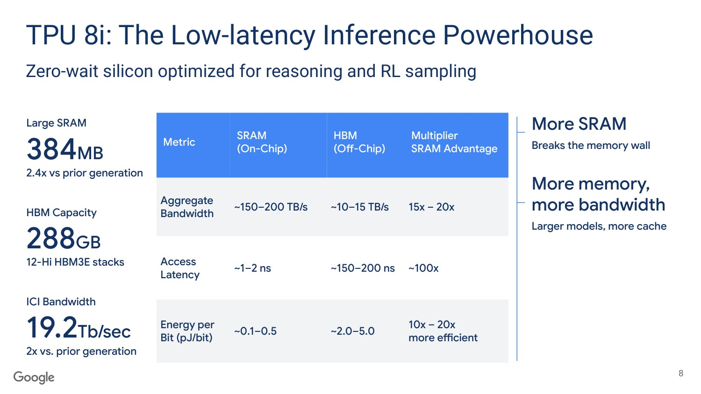
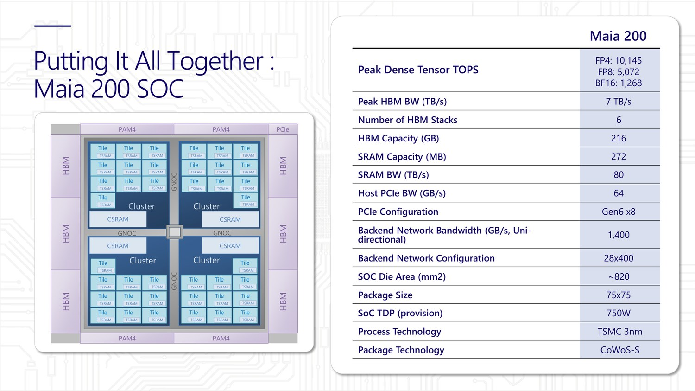
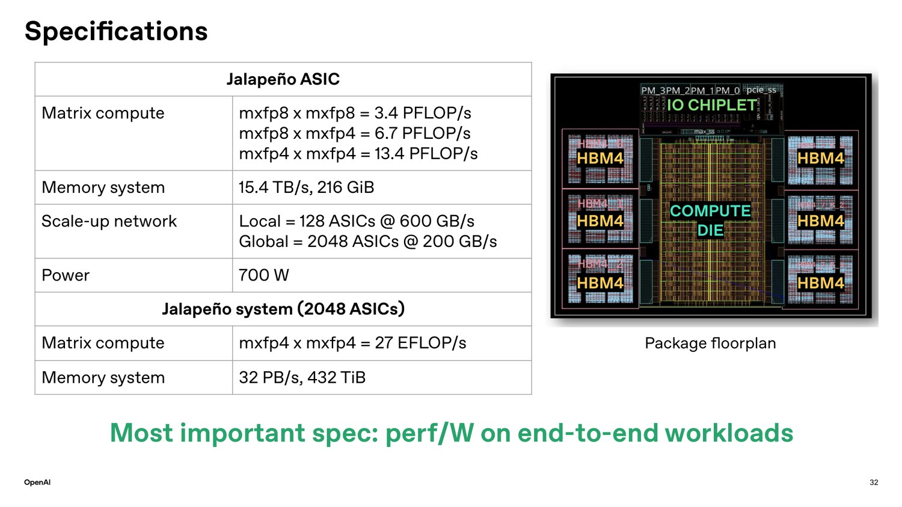
2.2 三条读表结论
结论一：FP4 已经完成从"可选"到"默认"的转变。
所有新加速器都把 FP4 或 MXFP4 放在规格表第一行：MI455X 的 40.26 PF 是 MXFP4，Maia 200 的 10,145 TOPS 是 FP4，Jalapeño 的 13.4 PF 是 mxfp4×mxfp4，MTIA 400 的 12 PF 是 MX4。FP8 退居第二档，BF16 只在"兼容性"语境下出现。
更值得注意的是块缩放粒度的分化： - Meta 明确采用 16 元素/共享指数，而 OCP MX 规范是 32 元素； - OpenAI 用 mxfp8×mxfp4 这种混合输入精度（激活 8 bit、权重 4 bit）； - AMD 强调 MXFP4 的 fractional scaling。
推断这说明"FP4"不再是一个统一格式，而是各家自行调优的家族。这对软件栈是坏消息——同一个模型在不同芯片上要做不同的量化方案。这也解释了为什么 OpenAI 要自研芯片：它需要对自己的模型做端到端量化协同设计。
结论二：容量和带宽开始脱钩。
把"GB per PFLOPS"作为横轴看，2026 年的产品分成两个明显不同的簇：
- 高带宽簇：MI455X（432 GB / 40 PF = 10.8 GB/PF，23.3 TB/s）、Jalapeño（216 GiB / 13.4 PF = 16 GiB/PF，15.4 TB/s）、Maia 200（216 GB，7 TB/s）
- 高容量低带宽簇：Crescent Island（480 GB LPDDR5X，带宽未披露且明显低于 HBM）、HBF 方案（4 TB / 12.8 TB/s）
Intel 在 Crescent Island 的幻灯片里把这件事讲得最透：
一手 "Llama2-70B → Kimi K2 1T：持有的字节多了 7.5×，每 token 读取的字节少了 4.4×"；结论是 "capacity 和 bandwidth 已经解耦"。
同一份幻灯片还给出了投机解码的经济学：
一手 "把 draft tree 深度翻倍，算力翻倍，只换来 1.39× 的 token"；9 个模型实测，每次验证通过 2.9–4.9 个 token。
推断这两条合起来是一个很强的论断：当模型大到单卡装不下时，"装得下"的价值会短暂超过"喂得快"。这正是 Crescent Island（480 GB LPDDR5X）、HBF（4 TB）、Jalapeño（216 GiB）共同瞄准的窗口。但这个窗口有多宽，取决于 MoE 稀疏度和 batch size——第 6.3 节会用一个可计算的判据把账算清楚。
结论三：功耗密度进入"必须报数"的时代。
Maia 200 报 750 W，Jalapeño 报 700 W，Crescent Island 报 350 W。而 MI455X、Rubin、TPU8 都不报单芯片功耗——因为它们已经改用"机柜级"口径：Helios 2.9 EF/柜、Vera Rubin NVL72 的 100 MW 工厂账本、Cerebras 的 3 晶圆/柜。
推断单芯片 TDP 正在失去意义。当一颗 GPU 的功耗取决于同机柜 71 颗邻居的负载时，讨论单卡瓦数就像讨论一台服务器的 CPU 瓦数——技术上正确，工程上无用。
第 3 章 CPU 的复活：agentic AI 把配角推回舞台中央
3.1 一个反直觉的事实
2026 年是近年来 CPU 在 Hot Chips 上占据最多场次的一年：NVIDIA Vera、Intel Diamond Rapids、Intel Wildcat Lake、Arm AGI、Fujitsu MONAKA、IBM 下一代 Z。六场 CPU 演讲，全部围绕同一个词：agentic。
为什么？把 agentic 工作流的时序摊开就明白了：
一手 NVIDIA LPU 幻灯片 p6 给出了最清晰的一张图：一次 agentic 会话里，context length 随步数线性增长（横轴 1→225 步，纵轴 0→500K tokens），因为"Output and tool results append to context"。每一轮都要重新 prefill 累积的上下文。
这张图解释了三件事：
- 为什么 CPU 重要：tool call、代码执行、沙箱、编排、权限校验，这些都在 CPU 上。NVIDIA 的解法是专门做一个 Vera CPU Rack（工具调用与沙箱机柜），把 CPU 从"GPU 的挂件"提升为独立机柜。
- 为什么单线程性能重要：agent 的一步往往是一段串行代码（解析 JSON、跑一个脚本、查一次数据库），IPC 和单核延迟直接决定 step time。
- 为什么"每瓦任务完成数"成为 CPU 的新指标：NVIDIA 的官方口径是 "1.8× faster task completion and twice the efficiency"，而不是 SPECint。
3.2 六颗 CPU 的六种活法
| 产品 | 定位 | 关键一手数据 | 战略意图 |
|---|---|---|---|
| NVIDIA Vera | agentic 单线程之王 | 88 Olympus 核 / 176 线程；10-wide decode、每周期 16 条指令；164 MB L3；SCF 3.4 TB/s bisection；1.5 TB SOCAMM LPDDR5X @1.2 TB/s；4.3 TB/s 聚合 off-die；1.8 TB/s NVLink-C2C；x16 PCIe Gen6 256 GB/s；CXL 3.1；SPECrate2026_int 1.2–1.8× vs EPYC 9755 | 用单片大 die（而非 chiplet）换单线程确定性；用 spatial multithreading 换可预测性；把 CPU 做成独立机柜 |
| Intel Diamond Rapids | 核心数与 LLC 的堆叠 | 256 核无 SMT；1.28 GB LLC；16ch DDR5-8000 / MRDIMM-12800；1.6 TB/s 内存子系统；128 lane（x16 可配 PCIe Gen6 / CXL 3.0 / UPI3）；18A-P + Foveros Direct 3D + UCIe-S；16 core chiplet + 2 fabric hub + 4 base tile + 2 IMH tile | 用 fabric hub 集中 I/O 与内存，让 core chiplet 可以按需增减；用 base tile 共享 LLC 提升容量 |
| Arm AGI | 首颗自研量产硅 | 136 Neoverse V3；N3P 双 chiplet；每 chiplet >50B 晶体管；300 W；3.7 GHz boost；272 MB L2（每核 2 MB）+ 128 MB SLC；96 lane PCIe Gen6；CXL 3.0；<100 ns 内存延迟；6 GB/s 每核；每 socket 最高 6 TB；DDR5-8800 | Arm 从"卖图纸"变成"卖芯片"，直接与自己的被授权方竞争高端插槽 |
| Fujitsu MONAKA | 用 3D 换成本 | 144 核 × 2 socket = 288 核/节点；Arm v9.3-A + SVE2-256；core die TSMC N2P + SRAM die N5（混合键合）+ IO die N5（Si interposer）；2nm 只占总硅面积 <30%；超低电压（电压 −30% → 功耗 −50%）；DDR5 12ch 8000+；PCIe 6.0/CXL3.0 96 lane；宣称 2× AI 性能、>50% TCO 下降 | "2nm 太贵，那就只把最热的那 30% 放上去"——这是全场最务实的一条成本工程思路 |
| IBM Z next | 双 ISA 的可靠性极致 | 11 核 SMT-2；5.7+ GHz / 2nm；同一核心原生跑 z/Architecture 和 AArch64 v9.3；36 MB 私有 L2；432 MB 虚拟 L3；3.5 GB 虚拟 L4；片上 DPU；2,792 条 AArch64 指令、239 个系统寄存器；99.9999999%（9 个 9） | 用同一个物理核心同时服务 z/OS 与 Linux-on-Arm，把"双生态"压进一颗芯片 |
| Intel Wildcat Lake | 反 chiplet 的 chiplet | 2P+4E；Xe3（2 核 20 TOPS）；NPU 17 TOPS；平台 40 TOPS；计算 die 面积 −38%、IO die 面积 −15%；去掉 Foveros base die，改 Organic MCP（35×25×1.23 mm vs 50×25×1.5 mm）；UCIe 8 GT/s，bump pitch 110 µm（vs Foveros 36 µm），D2D 面积 +70% | "为了省掉 base die 的成本，接受 D2D 面积大 70%"——这是全场唯一一个"反先进封装"的案例 |
3.3 深度分析：Vera 为什么敢用单片大 die
Vera 是本届最值得单独分析的 CPU，因为它的架构选择与行业趋势相反。
行业趋势：所有人都在做 chiplet——AMD 12 die、Intel 16+2+4+2、Arm 双 chiplet、Fujitsu 三 die 堆叠。理由很充分：良率、成本、IP 复用、节点混搭。
Vera 的选择：单片 compute die。幻灯片明确写 "monolithic compute die (vs traditional chiplet)"。
为什么？三个一手线索：
- "max single-threaded CPU at scale" —— 这是 Vera 的自我定位。跨 die 的一致性延迟会直接伤害单线程性能，而 agentic 的 step time 由单线程决定。
- "spatial multithreading for determinism" —— 176 线程不是 SMT（共享执行资源），而是空间多线程（独立资源）。这消除了 SMT 的资源争抢导致的延迟抖动。
- "10-wide decode / 16 instructions per cycle" —— 极宽的前端需要巨大的 BTB、uop cache 和重排序窗口，这些结构在 chiplet 边界上会被切碎。
推断Vera 的本质是一次赌注：赌 agentic 负载的价值密度足够高，高到值得放弃 chiplet 的成本优势，换取单线程确定性。这个赌注是否成立，取决于两件事——(a) agentic 是否真的成为主流负载；(b) Intel/AMD 能否用 chiplet + 更好的 fabric 把跨 die 延迟压到可接受。2027 年 DMR 与 Venice 上市后，这个赌注会被市场直接检验。
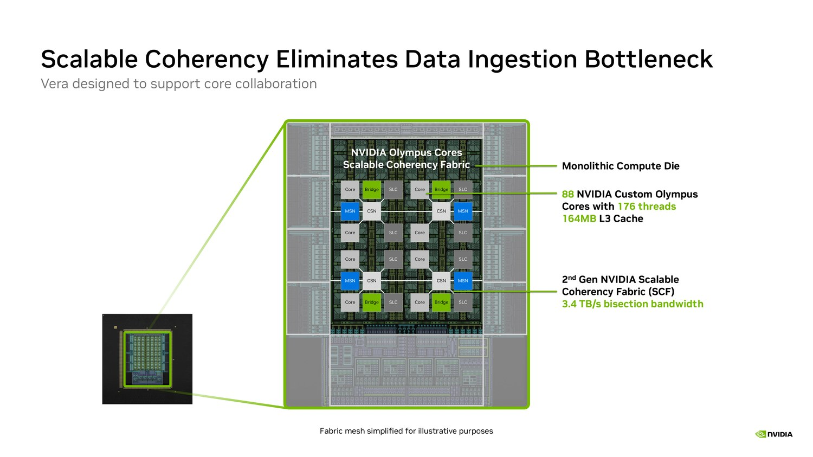

3.4 一个被忽略的细节：Arm 的份额数字
一手 Arm 幻灯片 p2：Neoverse 累计出货 1.5B 核（其中 500M 在最近 9 个月）；">60% Arm share as host CPU in AI server platforms"；>120k 家企业在云上用 Arm。
这三个数字里，最有信息量的是第二个：AI 服务器的主机 CPU 已经有 60% 是 Arm。这意味着 x86 在 AI 场景的失守已经发生，只是发生在"主机 CPU"这个不显眼的角落。
而 Arm 自己下场做 AGI CPU，则把这件事推向新阶段：过去 Arm 卖授权给 NVIDIA（Vera 用定制 Olympus）、Fujitsu（MONAKA）、Google（Axion）、AWS（Graviton）；现在 Arm 自己卖成品芯片，直接与客户竞争。 这是 ARM 商业模式的一次结构性冒险。
推断Arm AGI 的真实目标客户可能不是 NVIDIA/Google（它们有能力自研），而是那些没有自研能力、但又想摆脱 x86 的二三线云厂与主权云。这解释了为什么 AGI 强调"<100 ns 内存延迟""6 TB/socket""CXL 3.0"这些通用指标，而不是某个特定 AI 负载的优化。
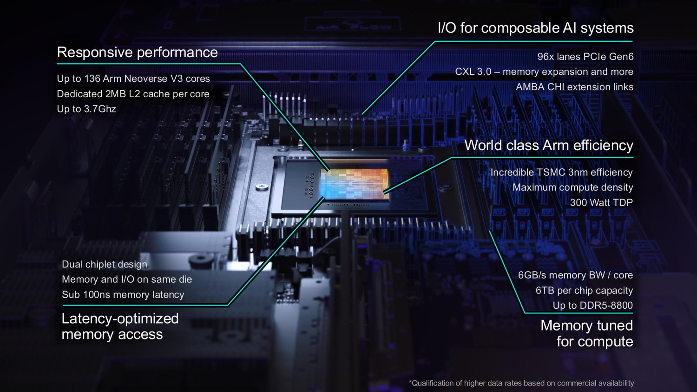
第 4 章 内存墙的量化：从技术曲线到成本结构
4.1 技术侧：两条斜率不同的曲线
一手 Micron 幻灯片 p3 用一张图讲完了整个内存墙：横轴 2017–2027，纵轴归一化性能（对数），两条曲线——TFLOPS 约 3×/2 years，HBM 带宽 <2×/2 years。图上标注了三代内存技术：2.5D attached memory（HBM2E/3）、2.5D advanced memory（HBM3E/4）、Processing in Memory。
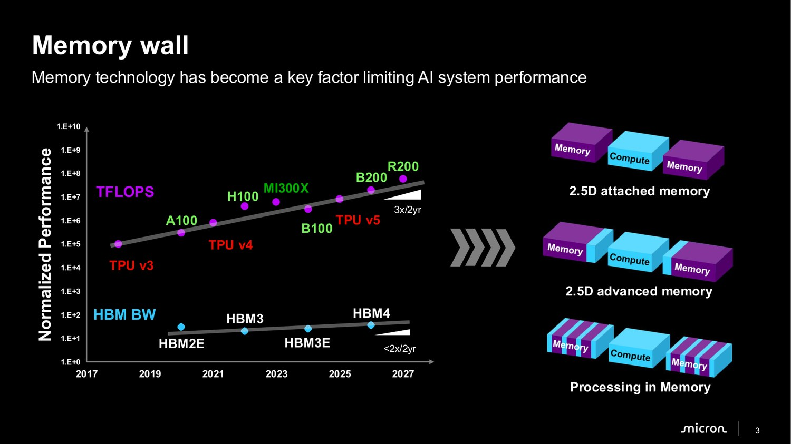
这条 1.5× 的斜率差，在 10 年尺度上累积成 5.6× 的缺口（3^5 / 2^5 ≈ 243/32）。这个缺口不可能靠"把 HBM 做快一点"填上，因为——
4.2 物理侧：同容量需要 3 倍硅
一手 Micron p11："Combined overhead from design architecture, advanced packaging, and manufacturing complexity results in ~3X more silicon being consumed for delivering HBM3E capacity relative to DDR5."
拆开看这 3× 从哪来： - HBM3E：256 I/O × 8 Gbps = 256 GB/s 核心带宽，128 banks/die - DDR5：8 I/O × 8 Gbps = 8 GB/s 核心带宽，32 banks/die
带宽差 32×，bank 数差 4×，代价是硅面积 3×。"天下没有免费的带宽，只是账单寄给不同部门"（知乎长文的表述，非常准确）。
更直观的数字：
一手 Micron p5：8 颗 HBM4 12-high 的封装，内存硅面积合计 12,344 mm²，是典型 GPU 硅面积的 ">8×"。
一手·推算若典型 GPU die 约 800–1,500 mm²，则 12,344 mm² 对应 8.2–15.4×，与 ">8×" 一致。反推内存占封装硅面积比例：12,344/(12,344+1,000) ≈ 92.5%；若 GPU 为 1,500 mm²，则约 89%。"约 90% 的封装硅面积与内存相关"这个广为流传的说法，是由此推算而来，不是幻灯片原文。
4.3 财务侧：内存占 AI 芯片 BOM 的 63%
这是本届会议最被低估的一个数字。
一手 Samsung LPDDR5X-PIM 幻灯片 p3，引用 Epoch AI（V. Somala, "Memory has grown to nearly two-thirds of AI chip component costs", accessed Aug 9, 2026）：
| 季度 | 内存 | 逻辑 | 封装 | 辅助 |
|---|---|---|---|---|
| 2024 Q1 | 52% | 15% | 19% | 14% |
| 2024 Q2 | 54% | 14% | 18% | 14% |
| 2025 Q1 | 56% | 12% | 18% | 14% |
| 2025 Q2 | 57% | 11% | 18% | 14% |
| 2025 Q3 | 56% | 12% | 17% | 14% |
| 2025 Q4（部分） | 59% | 11% | 17% | 14% |
| 2025 Q4 | 61% | 10% | 16% | 13% |
| 2025 Q4（末） | 63% | 9% | 15% | 13% |
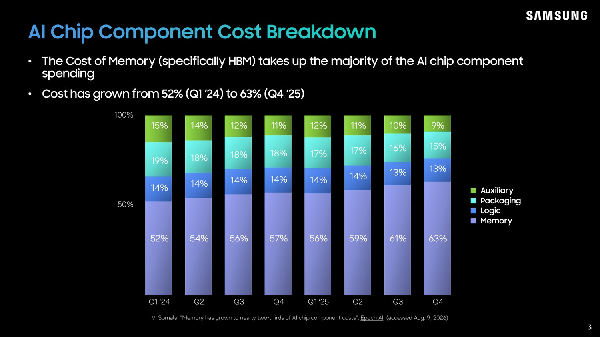
这张表的杀伤力在于它把"内存墙"从技术叙事变成了财务报表：
- 内存：52% → 63%（+11 pt）
- 逻辑：15% → 9%（−6 pt）
- 封装：19% → 15%（−4 pt）
- 辅助：14% → 13%（−1 pt）
推断逻辑占比跌到 9%，意味着"制程进步"对 AI 芯片成本的边际影响已经很小。一颗用 N3 还是 N2 的 GPU，在 BOM 里只差几个百分点；而用 HBM3E 还是 HBM4，差的是十几个百分点。这直接解释了为什么 2026 年所有厂商都在谈封装和内存，而不是谈制程。
同时这也解释了 Intel 为什么敢做 Crescent Island（用 LPDDR5X 替代 HBM）：在 63% 的成本被内存吃掉的市场里，"换一种内存"是唯一能显著改变 BOM 的杠杆。
4.4 供给侧：时间常数不匹配
读稿 知乎长文的核心论点："需求抬升、同容量约 3 倍的裸片面积以及超过两年的扩产周期相互放大"。文中引用 Hot Chips 现场数据："branded DRAM 和 NAND 的价格增长曾分别达到 7.1× 和 6.9×"。
报道 百度百科引用分析师 Jim Handy 在会上的计算：HBM 每片晶圆产出的 GB 数只有标准 DDR 的三分之一；HBM 现货价格已较此前水平上涨约 7 倍。
推断"1/3 GB per wafer" 与 Micron 的 "3× silicon area" 是同一事实的两种表述，互相独立印证，可信度高。而"7 倍涨价"与"7.1× 价格增长"量级一致，但周期口径不同（一个是现货价、一个是品牌 DRAM 长期涨幅），不可直接等同。
供给侧的三个硬约束： 1. wafer 转产即减供：同一片 wafer 做 HBM，交付 bit 数下降约 2/3； 2. 扩产周期 ≥2 年：设备交付 + 装机 + 爬坡； 3. 先进封装同步吃紧：CoWoS 产能与 HBM 需求线性相关。
推断这三条决定了 HBM 的紧缺不是周期性的，而是结构性的。即使 AI 资本开支增速放缓，HBM 的相对价格也很难回到 2023 年水平——因为"3× 硅面积"是物理常数，不会随需求波动。
4.5 本章结论
内存墙在 2026 年已经不是一个比喻，而是三个可结算的量：
| 层面 | 量化 | 后果 |
|---|---|---|
| 技术 | 3×/2yr vs <2×/2yr | 每代芯片的"带宽/算力比"持续恶化 |
| 物理 | 同容量 3× 硅面积；8×HBM4 = 12,344 mm² | 封装尺寸、良率、测试成本同步上升 |
| 财务 | BOM 占比 52%→63% | 内存成为定价主体，逻辑制程的杠杆失效 |
因此，"内存问题"的正确表述不是"内存不够快"，而是"数据搬运的成本已经超过了计算本身的成本"。 这句话是理解本报告后续所有章节的钥匙。
第 5 章 HBM 的物理极限：当"再加四层"不再是复制粘贴
5.1 HBM4 的规格底座
先把这一代的技术基线钉死。
一手 SK hynix 幻灯片 p5–p6：
| 项目 | HBM2E | HBM3 | HBM3E | HBM4 |
|---|---|---|---|---|
| 单 die 密度 | 16 Gb | 16 Gb | 24 Gb | 24 Gb |
| 单 cube 容量 | 16 GB | 24 GB | 36 GB | 36 GB（最高 48 GB） |
| 总 I/O | 1024 | 1024 | 1024 | 2048 |
| I/O 速率 | 3.6 Gbps | 5.6 Gbps | 8 Gbps | 8 Gbps（实际量产 11 Gbps） |
| 最大带宽 | 460 GB/s | 717 GB/s | 1024 GB/s | 2048 GB/s |
| 封装尺寸 | 10×11 mm² | 11×11 mm² | 11×11 mm² | 12.4×11 mm² |
一手 SK hynix p6 补充 HBM4 的关键工程参数： - 带宽 >2 TB/s，功耗效率改善 40%+，热阻改善 14%+ - 容量最高 48 GB（12Hi 已量产、16Hi 认证中） - Z-height 775 µm，12.8×11 mm² - 16,148 个 base micro-bump，>20K 个 TSV
一手 Micron p7 给出另一组 HBM4 参数（口径略有差异）：32 channels / 64 pseudo-channels / 2048 Data I/O / 11 Gbps / 2800 GB/s。
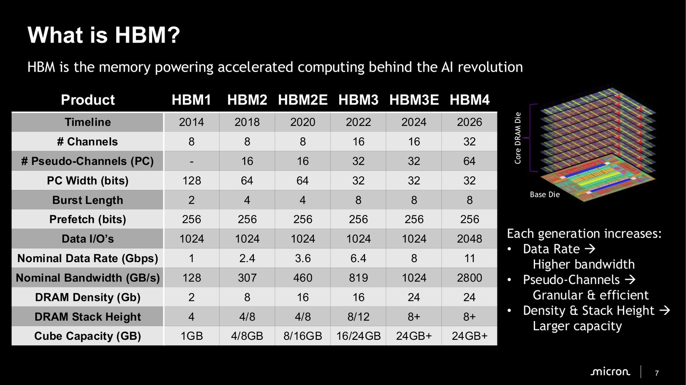
5.2 12Hi → 16Hi：一场几何学的极限压缩
这是本届最精彩的一页工程账。
一手 SK hynix p10：
| 挑战项 | 12Hi → 16Hi | 恶化程度 |
|---|---|---|
| ① 总封装高度 | 720 → 775 µm | 层数 +33%，高度仅 +7.6% |
| ② 芯片厚度 | 1.0× → 0.9× | 每层薄 10%（Die Warpage 风险） |
| ③ 层间 gap | 1.0× → 0.5× | 缝隙砍半（Gap-Fill 质量风险） |
| ④ Bump pitch | 1.0× → 0.9× | 间距缩 10%（对准与 void 风险） |
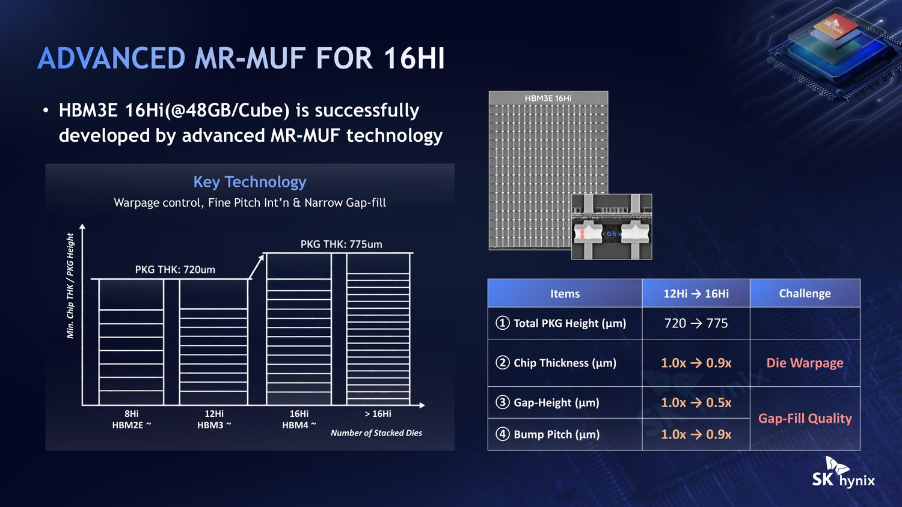
这三个数字放在一起，是一道无解的几何题：
16 层 × (die 厚度 + gap) + base die + 余量 ≤ 775 µm
12 层 × (die 厚度 + gap) + base die + 余量 ≤ 720 µm
层数 +4，高度只给 +55 µm。平均每层只能多分到 13.75 µm 的空间，而一层 die 本身的厚度已经是数十 µm 量级。所以必须同时做三件事：把 die 削薄、把 gap 砍半、把 bump 压密。
每一项都有对应的失败模式： - die 太薄 → wafer handling 难、warpage、机械强度不足、TSV reveal 控制难 - gap 太窄 → MUF（molded underfill）填不满、void、热循环后分层 - bump 太密 → 对准精度、桥接、连接良率
读稿 知乎长文的比喻很到位："楼层多了三分之一，总楼高基本不准涨，剩下的办法就非常符合房地产开发逻辑：所有楼层一起压层高。"
5.3 封装工艺的两条路线：TC-NCF vs MR-MUF
一手 SK hynix p7：
| 工艺 | 全称 | 优点 | 缺点 |
|---|---|---|---|
| TC-NCF | Thermo-Compression + Non-Conductive Film | 对薄 die warpage 不敏感；热阻低 | 产能低（逐颗键合）；设备节拍慢 |
| MR-MUF | Mass Reflow + Molded Underfill | 产能高；热阻低 | 对 chip warpage 敏感；窄 gap 填充困难 |
这里有一个容易被忽略的技术细节：SK hynix 幻灯片对 TC-NCF 的缺点写的是 "High thermal resistivity"，对 MR-MUF 写的是 "Low thermal resistivity"——这与很多二手解读相反。实际的热阻排序是：
一手 SK hynix p12 归一化热阻曲线： - TC-NCF（HBM2）：1×（基准） - MR-MUF（HBM2E/3）：0.55–0.65× - Advanced MR-MUF（HBM3E/4）：0.45–0.55× - Hybrid Bonding（HBM4E / ≥20Hi）：0.40×
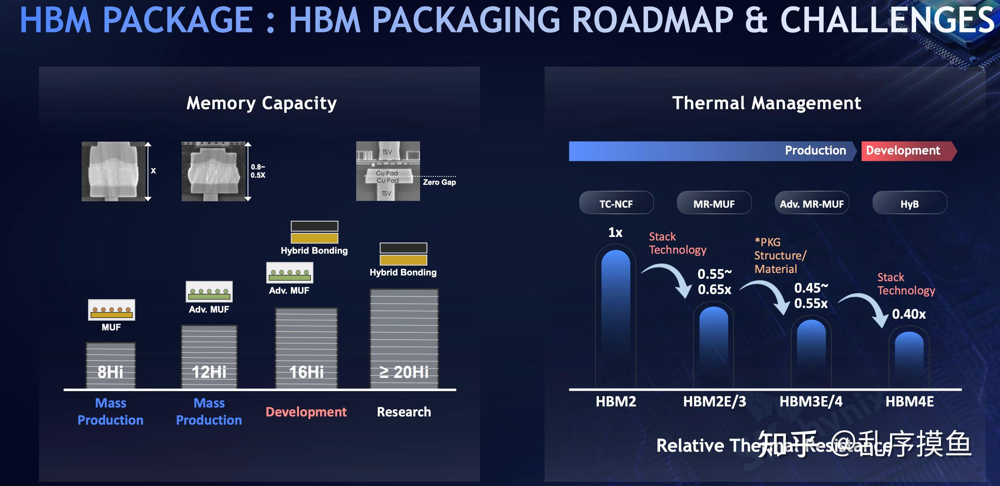
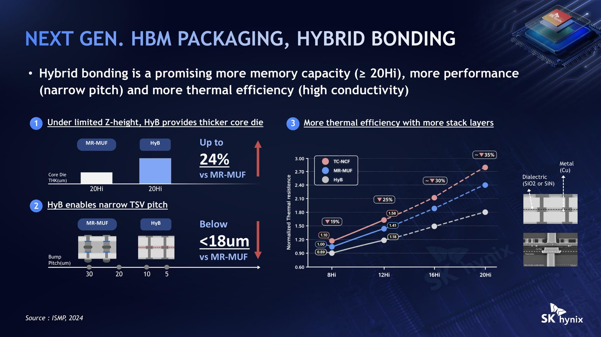
所以 Advanced MR-MUF 不是"材料升级"，而是在"产能 / 热阻 / warpage / 窄 gap 填充"四个约束之间重新找平衡点。
5.4 混合键合：为什么它必须来
一手 SK hynix p13–p14： - 工艺：室温 pick & place → SiO₂-SiO₂ 接触 → >200 °C 退火 → Cu-Cu 键合 - 收益 ①：相同 Z-height 下，core die 厚度可比 MR-MUF 增加最多 24% - 收益 ②：bump pitch 可缩到 <18 µm - 收益 ③：堆叠层数越多，热阻优势越大（20Hi 时相对 TC-NCF 低约 35%）
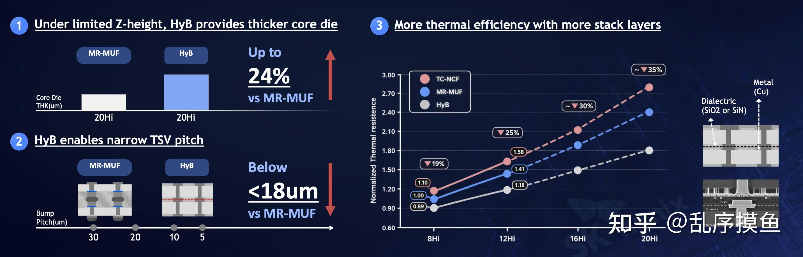
为什么"die 可以厚 24%"比"pitch <18 µm"更重要？
这是本报告要强调的一个判断。行业讨论混合键合时，几乎总是聚焦在"互连密度"上。但对 HBM 而言，取消 bump + underfill 所占的 Z-height，等于给每层 DRAM 退还了一点"层高预算"。
一手·推算假设 12Hi 时 die:gap ≈ 4:1（gap 约占总高 20%），16Hi 时 gap 砍半后 die:gap ≈ 8:1。混合键合把 gap 压到接近 0，则： - 在 775 µm 总高内，20Hi 的每层可用厚度 ≈ (775 − base die − 余量)/20 - 若 base die 与余量合计 150 µm，则每层 ≈ 31 µm - MR-MUF 方案下同高度只能做到 16Hi（每层 ≈ 39 µm，但 gap 占掉一半 → 实际 die 厚度 ≈ 20 µm）
也就是说，混合键合让"层数 +25%"和"die 厚度 +24%"同时成立——这是纯几何红利。
这解释了为什么 SK hynix 把 HyB 的定位放在 "≥20Hi" 而不是"更小 pitch"：20Hi 是现有工艺的物理天花板，跨过去必须换方法。
5.5 Samsung 的三阶段路线：base die 长成 SoC
如果说 SK hynix 讲的是"怎么把楼盖得更高"，Samsung 讲的是"楼的地基能不能顺便开个工厂"。
一手 Samsung《HBM Base Die》p25 给出三阶段路线：
Phase #1：xPU 面积回收（Area Reclamation）
动机：传统 scaling 三条路都撞墙—— - 节点微缩：在放缓 - 更大的单片 die：撞 reticle 极限 - 多 chiplet + interposer：interposer 尺寸撞物理极限（幻灯片标注 26 mm → 33 mm）
解法：把功能卸载到 B-die（base die）上，因为 B-die 已经在用先进逻辑工艺，而且面积富余。
三个具体动作：
| 动作 | 一手数据 | 收益 |
|---|---|---|
| ① PHY 面积压缩 | sHBM4：PHY 8×4 mm、CH depth 5.5 mm → cHBM4：D2D 8.5×1.5 mm、CH depth 2 mm | 面积 + 能效（更短通道 → 更低 pJ/bit） |
| ② Memory Controller 下沉 | cHBM4 B-die floorplan 含 Command Scheduler / Refresh Manager / Channel Arbiter / ACT-READ-WRITE Issue / Bank-State Tracker / QoS & Traffic Manager | xPU 面积回收；HBM 首次"自己决定如何被访问" |
| ③ SRAM-based cell repair | B-die 用富余面积做 repair resource，支持 cell 级 fail-address decode + redirection，跨 channel 共享 | 修复粒度从 row/column 提升到 cell；yield 与 field reliability |
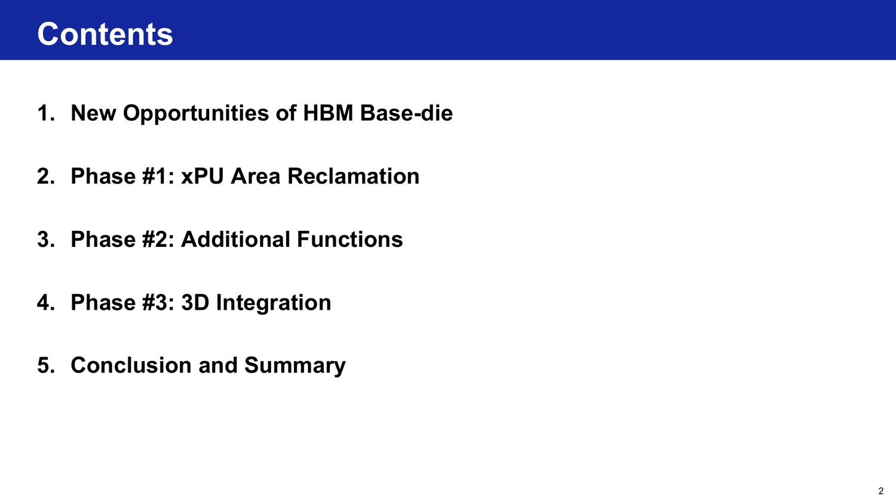
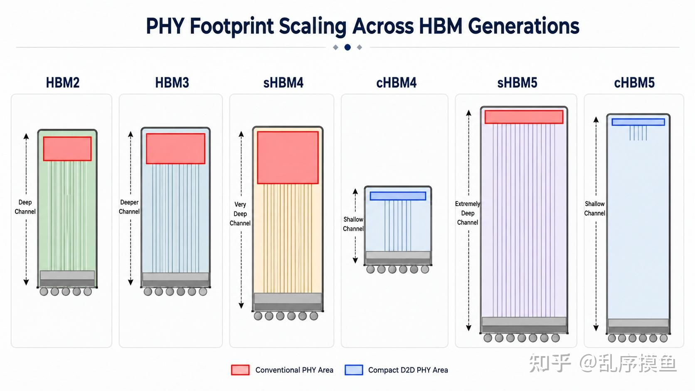
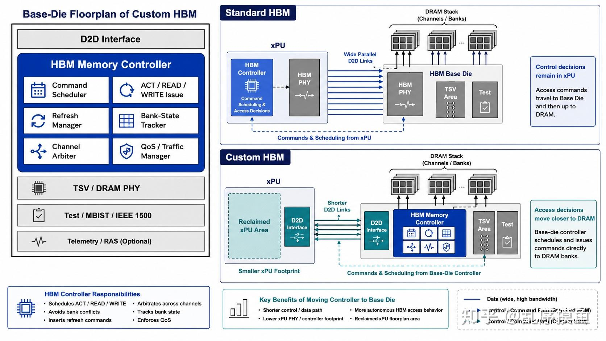
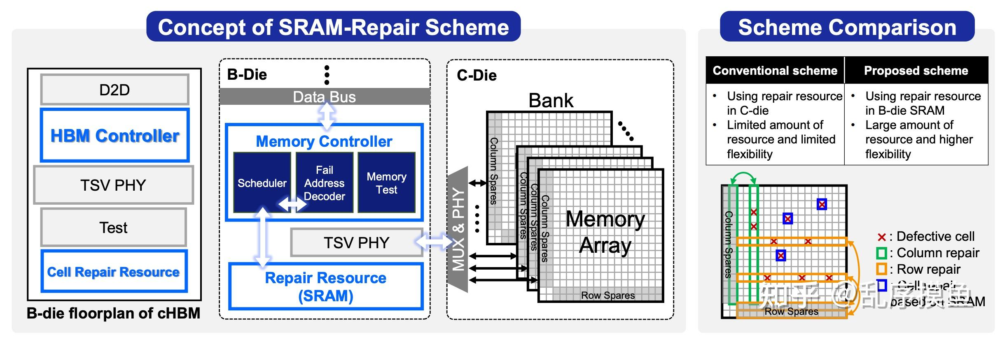
但 Phase #1 有一个副作用：热。
一手 Samsung p11–p12： - PHY 缩小后，channel 变短 → pJ/bit 下降，但同样吞吐塞进更小面积 → power density 飙升 - HBM4E：14 Gbps / 0.5 W·mm⁻² → HBM5：>28 Gbps（2×）/ >2.0 W·mm⁻²（4×） - 解法：HPB（Heat Path Block），在 PHY 上方修一条低热阻通路 - 效果：HPB 覆盖 >50% PHY 面积时，峰值温度下降 >35%
这是本届最典型的一个"系统级优化制造局部新问题"的案例：能耗/bit 下降，但局部热点恶化。Power spreadsheet 上的绿色，不等于 thermal map 上没有红色火山口。
Phase #2：功能扩张（Functional Expansion）
一手 Samsung p15–p20。在 MC 下沉之后，B-die 仍有大量未利用面积（"Unutilized Silicon Real Estate"），于是继续加：
| 功能 | 一手细节 | 判断 |
|---|---|---|
| RAS + Telemetry | thermal / voltage / process / aging 四类传感器；实时高速遥测 | ✅ 高价值：越靠近 DRAM 信息越全 |
| Advanced Test | OD-ATE（on-die ATE）/ PGEN（pattern generator），提升覆盖率与良率 | ✅ 高价值：测试成本随堆叠层数上升 |
| Memory Extension | 用 B-die 外侧 shore line 直接接外部内存，专用 PHY + controller | ⚠️ 中价值：比 PCIe 扩展带宽高、延迟低，但受封装 beachfront 限制 |
| Processing Element | 把部分 xPU 计算卸载到 B-die，减少 D2D 带宽需求 | ⚠️ 条件成立：只在"能显著减少搬运字节"时划算 |
| aHBM（2.5D） | B-die 集成 PE，最小化跨 interposer 的数据移动 | ⚠️ 同上 |
这里必须给一个明确的判断框架（也是知乎长文最有价值的一段）：
PE 是否值得下沉，不该问"base die 还有多少空面积"，而该问"这个 operator 搬下来以后，到底少搬了多少 bit？"
- 如果算子要扫 1 TB 只出 10 GB（filter / search / compression / reduction）→ 非常划算，省掉的是 TB 级 D2D 流量
- 如果算子是可高度复用的 GEMM tile → 不划算，只会得到一个"算力更弱、面积更紧、散热更差、还要新 compiler backend"的小加速器
推断Samsung 幻灯片把 PE 放在 Phase #2 的最后，并明确列出挑战（"limited silicon area and increased thermal density"），说明连 Samsung 自己也没把 PE 当作近期重点。真正会先落地的是 telemetry、repair、test——这些"不增加算力但直接改善良率与可靠性"的功能。
Phase #3：zHBM（真 3D 垂直集成）
一手 Samsung p21–p24： - 结构：多层 C-die（DRAM core）在上 → Interlayer（承担 bank 通信/测试/部分 base die 功能）→ xPU SoC 在下，整体落到 package substrate - 关键差异：distributed I/O（I/O 分散到 bank 附近）+ 真 3D 结构（消除 HBM PHY 与 D2D） - 收益：I/O 功耗 −70%；在 1200 W GPU + 4×HBM 假设下省 100 W = 8.3%；DRAM 带宽 +230% - 关键技术：WoW（Wafer-on-Wafer）+ HCB（Hybrid Copper Bonding）；以及统一的 SoC-DRAM 设计与验证流程（RTL/DFT/综合PnR/时序收敛/sign-off 与 DRAM 的 schematic/layout 流程合并）
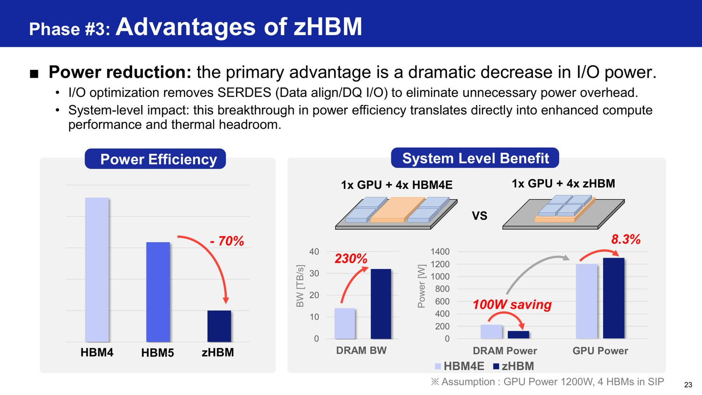
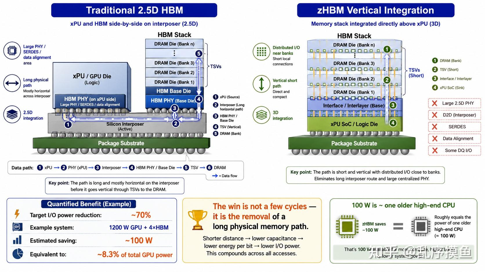
为什么 −70% I/O 功耗是可信的？
把传统 2.5D 路径的能量账摊开：
xPU PHY → Interposer 走线（毫米级）→ HBM PHY → Base Die → TSV → DRAM
zHBM 把这条路径折叠成：
xPU → TSV（几十微米）→ DRAM bank
一手 d-Matrix 幻灯片 p8 给出了独立于 Samsung 的能量阶梯（energy ladder），可以交叉验证：
| 环节 | 能耗 / bit |
|---|---|
| 片上 SRAM | ~50 fJ |
| 片上走线 | ~35 fJ/mm |
| 3D 垂直 I/O | 0.3–0.4 pJ |
| Interposer 走线 | ~500 fJ/mm |
| 2.5D HBM4（系统级） | 2.5 pJ + 3 pJ（片上） |
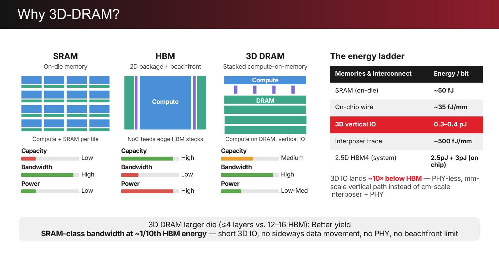
一手·推算3D IO（0.35 pJ）vs 2.5D HBM4 系统级（2.5 pJ + 3 pJ = 5.5 pJ）→ 约 15.7× 更低。d-Matrix 自己的表述是 "3D IO lands ~10× below HBM"。
Samsung 的 "−70% I/O 功耗" 对应 3.3× 降低，比 d-Matrix 的 10× 保守得多——因为 Samsung 的 −70% 只算 I/O 部分（不含片上），且保留了 interlayer。
两条独立来源（Samsung 从 DRAM 侧、d-Matrix 从加速器侧）都指向同一个结论：垂直路径比水平路径省 3–10× 的 I/O 能量。这是 3D 集成最硬的物理依据。
5.6 本章判断
推断三条带置信度的判断：
判断 1（高置信）：16Hi 是 microbump + MUF 的最后一代。 几何约束（+33% 层数 / +7.6% 高度）已经用尽所有余量。20Hi 必须混合键合，没有第二条路。
判断 2（中高置信）：base die 的"逻辑化"会在 2027–2028 年成为标配，但 PE 不会。 先落地的是 PHY 压缩、MC 下沉、telemetry、repair、test——这些是"确定省钱/省面积/提良率"的。PE 的收益高度依赖算子特性，且需要 compiler 支持，落地会慢得多。
判断 3（中置信）：zHBM 的时间点不会早于 2029 年。 理由不是技术不可行，而是商业结构：zHBM 要求 xPU 厂与 DRAM 厂做统一的设计与验证流程（Samsung 幻灯片明确写 "unified SoC-DRAM design and verification flow is essential"）。这意味着两家公司要共享 RTL、共享 DFT、共享时序收敛——这是组织问题，不是技术问题。历史上类似的深度协同（如 Sony 与 Toshiba 的 Cell）都花了远超预期的时间。
第 6 章 五条"反 HBM"路线：谁在赌另一条路
本届会议最有意思的现象是：在 HBM 最强势的一年，反 HBM 的路线反而最多、最具体。这不是巧合——正是因为 HBM 的物理与经济极限被量化得如此清楚（第 4、5 章），替代路线才有了明确的攻击点。
6.1 五条路线对照表
| 路线 | 代表 | 核心机制 | 一手关键数据 | 攻击的 HBM 弱点 | 自身弱点 |
|---|---|---|---|---|---|
| 3D-DRAM | d-Matrix Raptor | 逻辑 die 压在 3D-DRAM 上，36 µm F2F，无 PHY | 32.6 vs 1.67 GB/s/mm²（20×）；2.96 vs 40 mW/GB/s（13.5×）；100 TB/s @ 0.37 pJ/bit = 296 W | beachfront 限制、interposer 功耗、PHY 开销 | Tj 105 °C、retention 掉到 4 ms、良率、成本 |
| HBF | OXMIQ（OCP 规范 v0.7.0） | NAND 堆叠 + 宽 UCIe 接口 | Grade1/2/3 = 0.384/1.536/3.072 TB/s；256/512/512 GiB；64 KB read / 1 MB write | $/GB（β≈1× vs 10–14×） | α 低一个数量级；写寿命；24 h@85 °C retention |
| PIM（DRAM 内计算） | Samsung LPDDR5X-PIM | MAC tree 进 DRAM bank | 8× 带宽（76.8→614 GB/s）；3.01× 端到端（27.0→81.3 TPS） | 带宽/能耗；HBM 的封装复杂度 | 算力有限（2.4 TOPS SINT4）；需 compiler |
| CXL 近存 | XCENA MX1 | Type-3 CXL + 3072 RISC-V 核 + SSD-backed memory | 4.7× vs CXL / 2× vs 本地 DRAM；18.7× GB/J vs CXL；最高 2 TB | 容量扩展成本；主机 CPU 参与 | CXL 延迟；软件栈；生态 |
| 全片上 SRAM | Cerebras CS-4 / NVIDIA LPU | 权重全放片上，无外部内存 | CS-4：129.6 PB/s / 132 GB；LPU：256 LPU / 128 GB SRAM / 40 PB/s | 彻底消除内存墙 | 容量上限；晶圆级良率；成本 |
6.2 深度分析一：d-Matrix Raptor 为什么是本届最硬的工程论证
Raptor 的价值不在于"100 TB/s"这个数字（那是营销口径），而在于它用硅面积做了归一化：
一手 d-Matrix p28：
| 指标 | Raptor 3D-DRAM | HBM4 24 Gb | HBM4 32 Gb | Rubin R200 |
|---|---|---|---|---|
| 容量（MB/mm²） | 11.4 | 21.9 | 26.3 | 21.9 |
| 带宽（GB/s/mm²） | 32.6 | 1.67 | 1.51 | 1.39 |
| 每 GB/s 功耗（mW/GB/s） | 2.96 | 40.0 | 40.0 | 40.0 |
（注：Raptor 有效带宽利用率 83%，Rubin 85%；Rubin R200 = 8× HBM4 24 Gb SoC）
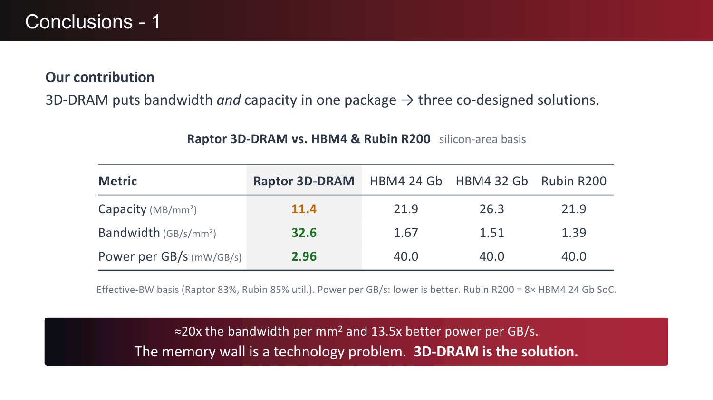
读这张表要注意三件事：
- Raptor 在容量密度上是输的（11.4 vs 21.9–26.3 MB/mm²）。这符合物理：3D-DRAM 只用 ≤4 层（vs HBM 12–16 层），单位面积容量必然低。
- Raptor 在带宽密度上赢 20×。这是核心：因为它没有 PHY、没有 interposer、没有 beachfront 限制。
- 功耗/带宽赢 13.5×。这是最值钱的一项——它直接换算成"同样瓦数能跑多少 token"。
但 Raptor 必须解决三个耦合的工程难题（d-Matrix 自己承认 "These Challenges Are Entangled"）：
挑战 1：bank-to-channel 映射（128 B flit 除不尽）
一手 p19–p22： - 每 chiplet 840 banks（768 可用 + 72 spare），256 channels（16 ch × 16 TE-Group） - 每次访问需要 128 B flit，每个 bank 每次列访问出 32 B - 算术：128 ÷ 32 = 4 banks/ch 需要，但 768 ÷ 256 = 3 banks/ch 可用 - 朴素方案：一次 channel 访问出 96 B → 128 B flit 需要两次访问 → 取 192 B → 33% overfetch ≈ 33 TB/s 浪费 - 解法：stream blocking —— 把第 4 个 32 B（partial）放进一次被 3 个 flit 共享的访问：4×96 = 384 B 进，3×128 = 384 B 出，0% overfetch
这个"3 vs 4"的整数问题是本届最漂亮的工程细节之一：它不是架构选择，而是被 840/256 这两个数字逼出来的。而解法（stream blocking）不需要 shifting network，纯粹靠访问模式重排。
挑战 2：I/O 功耗墙（无引脚 DBI）
一手 p23–p24： - 100 TB/s × 0.37 pJ/bit = 296 W - 传统 DBI（Data Bus Inversion）依赖：多周期 burst（BL 4–16）让 PHY 看到完整 burst 再决定是否反相 + 每 byte lane 一根 DBI 引脚 - 3D-DRAM 是单周期 256-bit 传输，无 burst、无 sideband pin → DBI 无法实现 - 解法：stream flipping（无引脚 DBI） —— 每个 flit 与前一 flit 比较后决定是否反相，1 bit metadata 与 ECC 同址存放 - 效果：0.8% 存储开销，20% I/O 功耗节省，零 PHY 改动
挑战 3：105 °C 下的可靠性
一手 p25–p27： - Tj 最高 105 °C - retention：标准 32 ms @85 °C → 4 ms @105 °C（8× 刷新频率） - 三个复合问题：① 840 banks 中 1% 故障就可能毁掉整条 channel；② 禁用故障 bank 会让 channel 变窄，破坏 tensor engine 要求的通道对称性；③ 高温带来更多软错误 - 解法 A：深 bank 化 —— Raptor 1,366 rows vs 商品 DRAM ~32K rows，扫描行数少 16–32×，使 4 ms 刷新只损失 1.37% 带宽（仍达 ~100 TB/s） - 解法 B：bank chaining —— 72 个 in-line 冗余 µbank + M=2 级物理 mux，可容忍任意 2 个故障，channel 保持对称 - 解法 C：interleaved ECC —— 最后 8 列（共 124 列）放 [132,128] Reed-Solomon + DBI bits，与 subarray 交织
结论：Raptor 的技术可信度很高，因为 d-Matrix 把每一个"物理上必然出现的问题"都给出了具体的、带数字的解法。这是本届唯一一份把"3D-DRAM 到底难在哪"讲清楚的材料。
推断但商业化仍有悬念：32 GB/卡、72 卡 scale-up 意味着单机柜 2.3 TB，只够装 3T 级模型的 FP4 权重（Kimi K3 约 1.56 TB）+ 部分 KV。d-Matrix 宣称 "72-card scale-up at 32 GB/card hosts Kimi K3 at 1M context" 并 "sustains ~1000 TPS/User"，但这是极度乐观的配置假设（4-bit 权重 + 8-bit KV）。真实业务下的可用性需要第三方验证。
6.3 深度分析二：HBF 的适用边界（一个可计算的判据）
OXMIQ 的演讲是本届理论上最严谨的一份——它没有吹 HBF，而是给出了一个判定 HBF 是否划算的公式。
一手 OXMIQ p21：
$mem = β · max(C, I·b/α)- β：单位容量成本（$/GB） - α：每 GB 容量能提供的带宽（GB/s per GB） - C：装下模型与状态所需的容量（GB） - I：目标 token rate（token/s） - b：每步需读取的字节数（byte/token）判据：figure of merit = (β/α) · b - 当 C > I·b/α → 受容量约束 → 低 β 的 HBF 划算 - 当 I·b/α > C → 受带宽约束 → 高 α 的 HBM 划算
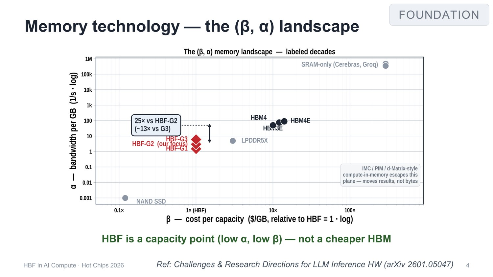
这个公式的价值在于它把"HBF 靠不靠谱"变成了一个可代入数字的问题。
一手 OXMIQ p7 与 p11 给出两组具体配置：
| 配置 | 容量 | 带宽 | 说明 |
|---|---|---|---|
| HBM-only | 288 GB | 22.0 TB/s | 基线 |
| All-HBF | 4,096 GB | 12.8 TB/s | 容量 14×，带宽 0.58× |
| 2×HBF + 6×HBM | 1,240 GB | 19.7 TB/s 峰值（有效 19→4 TB/s） | 混合 |
72-GPU 机柜级：
| 配置 | 每 DP 容量 | 机柜容量 | 聚合带宽 | 并行策略 |
|---|---|---|---|---|
| HBM-only | 2.3 TB | 20.7 TB（1×） | 1,584 TB/s | TP8 · DP9 |
| HBF-only | 4.1 TB | 294.9 TB（14×） | 922 TB/s（0.6×） | TP1 · DP72 |
| HBF + HBM | 2.5 TB | 89.3 TB（4.3×） | 1,418 → 279 TB/s | TP2 · DP36 |
关键洞察：HBF-only 用 0.6× 的带宽换来 14× 的容量。 这笔交易在什么时候划算？OXMIQ 自己给了答案：
一手 p17 Kimi K3 2.8T 的权重拆分： - 总权重 1.56 TB - MoE expert 权重 1.45 TB（93%） - attention 30.2 GB、router 4.7 GB、其余 72.2 GB - KV-Cache：每 1M token 30 GB
一手·推算以 Kimi K3 为例，代入公式： - 若目标 1,000 token/s/user，batch=1，每 token 需读 4-bit 量化的 1.45 TB expert 中的激活部分（假设 top-k 命中 5% = 72.5 GB）→ I·b = 72,500 GB/s - 若 α_HBF = 3 GB/s/GB（Grade 3），则 I·b/α = 24.2 TB —— 远超 1.56 TB 的容量需求 - 结论：单用户低延迟场景下，HBF 会被带宽卡死
但若 batch 提高到 64，每 token 的 expert 读取被 64 个用户摊薄 → I·b 降至约 1,133 GB/s → I·b/α ≈ 378 GB < 容量需求 → 容量约束主导，HBF 划算
这就是 HBF 的真实边界：大 batch + 高稀疏 MoE + 长上下文。反过来说，低 batch 的交互式推理（agentic 单用户）是 HBF 最差的场景。
推断这个结论有一个反直觉的推论：HBF 与 LPU（NVIDIA Groq 3 LPX）瞄准的是完全相反的负载。LPU 用全 SRAM 换极致单用户延迟（低 batch、小容量、超高带宽），HBF 用 NAND 换超大容量（高 batch、大容量、低带宽）。它们不是竞争关系，而是同一推理市场的两端。
HBF 的软件障碍（OXMIQ 自己列出的）：
一手 p15： - 大事务要求：64 KB read / 1 MB write / 64 KB 对齐 - 通过 DMA 访问，不进 GPU cache hierarchy - HBF 与 HBM 共存需独立的内存管理 - 上电保持约 24 h @85 °C → 需要 host-managed lifecycle - 需要精细主机管理才能达到 ~10 年寿命 - Scratchpad SRAM 不能直接读写 NAND block
以及 p18 的组织性问题："MoE Experts Pool is not yet available in vLLM" —— 今天的 vLLM 路径面向 CPU/LMCache，不面向 HBF。
推断这段自陈比任何批评都更有说服力。一项技术如果连提出者都要用一整页讲"软件还没准备好"，那它的量产时间至少还要 2–3 年。
6.4 深度分析三：PIM 的"够用即好"
Samsung LPDDR5X-PIM 是本届唯一一个已经流片并给出实测数据的近存计算产品。
一手 Samsung p6–p18：
| 项目 | 数据 |
|---|---|
| PIM 配置 | 1 PIM / 1 bank，16 个 PIM block 覆盖所有 DRAM bank |
| 带宽 | DRAM 76.8 GB/s → PIM 614 GB/s（8×） |
| 寄存器 | IRF 1 kbit / SRF 4 kbit / ScRF 2 kbit / VRF 1 kbit（每 PIM） |
| 精度 | 15 种组合：SINT4 2.4 TOPS、SINT8 1.2 TOPS、FP8 1.2 TFLOPS |
| 封装 | 561-ball，16 GB，2 rank × 4-CH(x64)，@9600 Mbps |
| 实测 | Llama-3.1-8B、320 token 上下文：12.3 s → 5.4 s（>2.28× 更快）；27.0 → 81.3 TPS（>3.01×） |
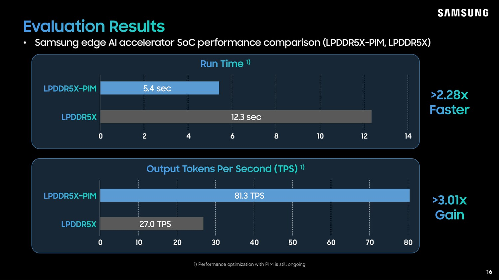
两个关键工程创新：
- AAM（Address Align Mode） —— 用 DRAM 地址到 MAC 指令的映射，复用现有 DRAM controller 的 reordering 机制。这是"drop-in replacement"的关键：不需要改 host SoC 的控制器。
- 快速模式切换 —— 通过 MR1 定义的模式切换行，比上一代 HBM-PIM 更快更可靠地在 SB（single-bank）与 MB（multi-bank）模式间切换。
推断PIM 的战略意义不在性能（3× 而已），而在它验证了"存储厂可以在标准品之外做差异化产品"这条路。对 Samsung/SK hynix/Micron 而言，这意味着它们可以从"卖 JEDEC 标准件"升级为"卖带 IP 的定制件"——这是定价权的转移。
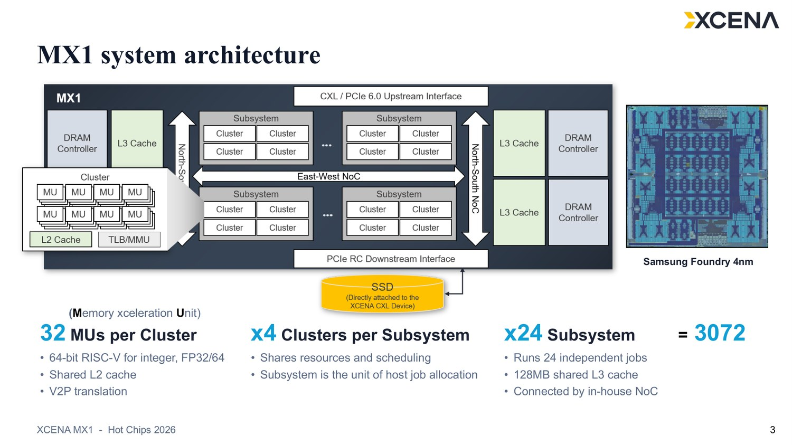
6.5 本章结论
五条路线的真实定位：
| 路线 | 什么时候赢 | 什么时候输 | 2026 成熟度 |
|---|---|---|---|
| 3D-DRAM | 低延迟 decode、容量适中、带宽饥渴 | 需要超大容量、成本敏感 | 硅已验证，2027 商用 |
| HBF | 大 batch + 高稀疏 MoE + 长上下文 | 低 batch 交互式、dense 模型 | 规范 v0.7.0，软件未就绪 |
| PIM | 边缘/移动推理、带宽受限但算力需求低 | 大算力训练 | 已量产 |
| CXL 近存 | 容量扩展、RAG、KV offload、数据分析 | 极低延迟场景 | 芯片已出，生态早期 |
| 全片上 SRAM | 单用户极致延迟、中等模型 | 超大模型、成本 | CS-4 已 GA，LPU 已量产 |
推断最重要的判断：这五条路线没有一条能取代 HBM。 它们共同构成一个新的内存层级——HBM 在最热层，3D-DRAM 在次热层，HBF/CXL 在温层，SSD 在冷层，PIM 则是在各层内部做"就地处理"。2026 年的真正变化不是"HBM 被替代"，而是"内存从一层变成五层"。
第 7 章 互连：从三层网络到五层网络
7.1 五层结构的确立
NVIDIA 在 Spectrum-X 演讲里给出了本届最清晰的一张网络分层图：
一手 NVIDIA Spectrum-X p25 与 BlueField-4 p9：
| 层级 | 范围 | 专属硅 | 一手关键指标 |
|---|---|---|---|
| Scale-Up | 机柜内，GPU 之间 | NVLink 6 / NVLink Switch | 3.6 TB/s per GPU all-to-all、72-GPU 域、130 TFLOPS 网络内计算、3× 低延迟、10× 包速率 |
| Scale-Out | 机柜间，集群 | Spectrum-X Ethernet / ConnectX-9 SuperNIC | 102.4T 交换 + 1.6T SuperNIC；Multiplane 支持 512k GPU |
| Scale-In | 南北向接入（存储/安全/管理） | BlueField-4 DPU | 7 Tb/s、64 核 Grace、CX-9 800G、200 MPPS、25 MIOPs |
| Scale-Across | 跨数据中心 | Spectrum-XGS | 800 Gb/s/端口、1.9× 多站点性能 |
| Context Scale | 长上下文 KV 存储 | Vera BlueField-4 STX / CMX | 3.2 Tb/s 存储访问、10× IOPS、5× 能效 |
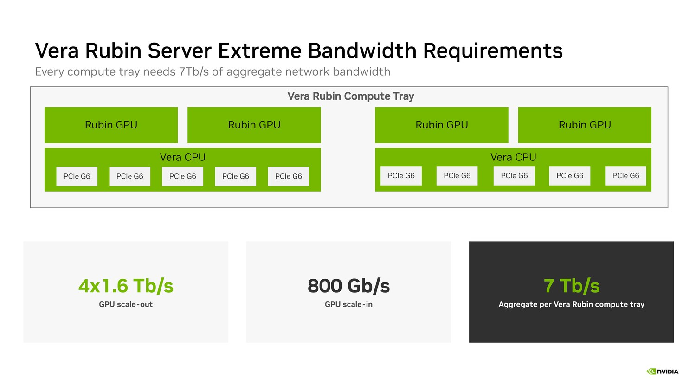
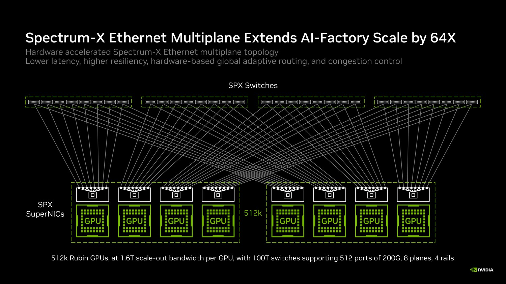
推断这张图最重要的信息不是"五层"，而是"每一层都有自己的专属芯片"。 过去 Scale-In 是"网卡 + 主机 CPU"，Scale-Across 是"路由器"，Context Scale 根本不存在（KV 放本地 SSD 或主机内存）。2026 年这五个位置全部被专用硅占据——这是"网络从配套变成产品线"的最硬证据。
7.2 Scale-Up：三条互不兼容的路线
这是本届竞争最激烈的战场。
路线 A：NVLink 6（NVIDIA 私有）
一手 Rubin p.：3.6 TB/s per-GPU all-to-all、72-GPU 域、130 TFLOPS in-network compute、3× lower latency、10× packet rate。 一手 NVLink Fusion：3.6 TB/s per XPU、72 XPU 单域、18 计算托盘 + 9 交换托盘 + 1 spine、无电缆无软管、45 °C 进水、100% 液冷。
路线 B：UALoE（AMD + Broadcom，跑在以太网上）
一手 AMD MI400 系统架构 p4–p14：
| 项目 | 数据 |
|---|---|
| 每 GPU scale-up 带宽 | 1.8 TB/s/dir（72× IFoE @ 200G） |
| 每 MI455X 集成适配器 | 18× 800 Gbps UALoE |
| 每 EAM 链路 | 12× 3×2 UALoE links |
| 交换 ASIC | 2× 512 端口 200G UALoE，每 ASIC 72× 3×2 主动链路 |
| 每交换机带宽 | 10.8 TB/s/dir |
| 底层 | 开放以太网 + ESUN 标准 + Broadcom 交换机 |
| 协议 | 轻量可靠协议、动态打包（带宽 vs 延迟）、利用以太网 PFC 流控 |
| 可靠性 | 链路层 replay 或端到端重传；故障时通过备用网络平面重传；链路 flap 后可恢复满性能 |
| 编程模型 | 分布式共享内存（mmap + memory registration key）、拓扑感知 DMA 引擎 |
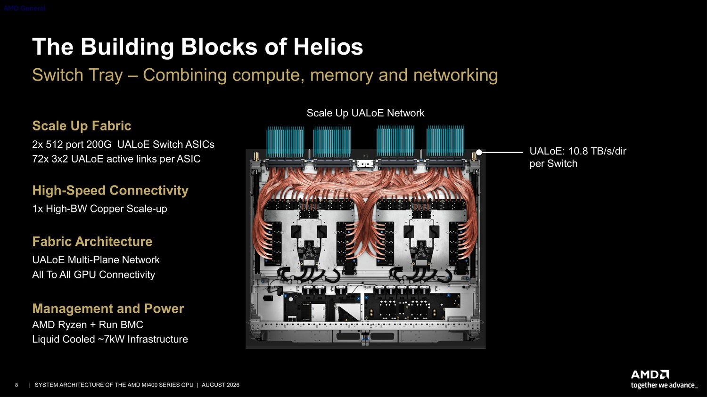
路线 C：SambaNova 的 800G 全互联
一手 SN50 p23–p25： - 每 RDU 10 个集成 800G 以太端口，进出 1,000 GB/s - 7 个端口做 8 卡全互联，2 个端口做 scale-up 网络 - 8S 节点：每 RDU 200 GB/s 节点内 scale-up + 50 GB/s（1× 400G RoCE NIC）节点间 - 64S：2 台 64 端口 800G 交换机，单层交换 - 512S：12 台 800G 64 端口交换机，rail-optimized 两层网络
三条路线的对比
| 维度 | NVLink 6 | UALoE | SambaNova 800G |
|---|---|---|---|
| 每 GPU/XPU 带宽 | 3.6 TB/s | 1.8 TB/s/dir | 200 GB/s（8S 内） |
| 域大小 | 72 | 72（单 Pod） | 8 / 64 / 512 |
| 物理层 | 私有铜缆 cartridge | 标准以太网 | 标准以太网 |
| 交换芯片 | NVIDIA 私有 | Broadcom | 商用 800G |
| 开放性 | 封闭（NVLink Fusion 有限开放） | 开放（ESUN + UALink） | 开放 |
| 优势 | 带宽最高、延迟最低、网络内计算 | 生态开放、成本可控、可复用以太网运维 | 单层交换、软件简单 |
推断这是 2026 年最重要的产业分歧。NVLink 6 在绝对性能上仍然领先（3.6 vs 1.8 TB/s），但 UALoE 用"标准以太网 + Broadcom 交换"把成本与供应链风险压了下来。考虑到第 4 章的成本结构（内存吃掉 63% 的 BOM），Scale-Up 网络的成本占比正在被放大审视——这给了 UALoE 真实的机会窗口。
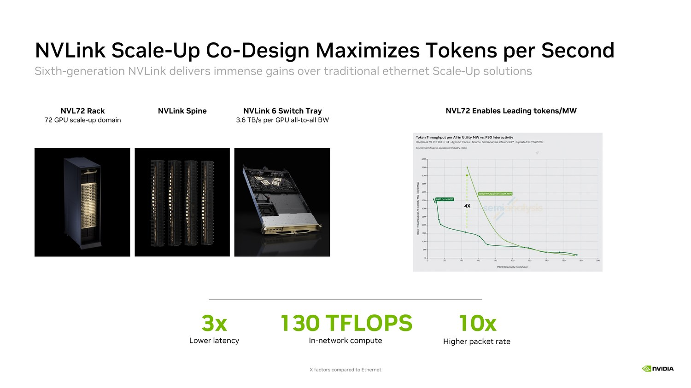
7.3 Scale-Out：Spectrum-X Multiplane 的"降一层"策略
一手 Spectrum-X p13–p19：
| 拓扑 | 规模 | 交换机配置 |
|---|---|---|
| 传统 ToR | 2k GPU | — |
| Multi-Rail | 8k GPU | 100T 交换机，64 端口 × 1.6T，4 rail |
| Multiplane | 512k GPU | 100T 交换机，512 端口 × 200G，8 plane，4 rail |
核心洞察：不是"加一层"，而是"换一种切法"。
传统扩规模的方法是多加一层交换（spine-leaf 变三层）。Multiplane 的方法是把同一台 100T 交换机切成 512 个 200G 端口，用 8 个并行平面替代 1 个高速平面。
收益（全部一手）： - 省 1.7× scale-out 交换机 - 故障时保持 90% 带宽（传统多层单 rail 直接掉到 0%） - 检测 2.68 ms（400× 更快）、恢复 100 ms（11× 更快） - 1.6× AI 工厂 goodput
同一张图（图 26）在 7.3 节已完整展示，此处不重复。
为什么"降速换平面"能赢？
推断因为 AI 训练的瓶颈不是单链路带宽，而是拥塞时的尾延迟。8×200G 的 8 个平面提供了 8 条独立路径，任何一条故障只损失 1/8 带宽；而 1×1.6T 的单平面一旦故障，整条路径归零。这是"用冗余换确定性"的经典工程取舍，与 HBM 用 3× 硅面积换带宽是同一种思路。
7.4 Scale-Out 的开放阵营：Thor Ultra 与 eRoCE
一手 Broadcom Thor Ultra：
| 项目 | 数据 |
|---|---|
| 工艺 / 晶体管 | 5nm / 2.4B+ |
| 封装 | 27×27 mm |
| 芯片功耗 | 40–42 W（板卡 50–55 W） |
| 主机接口 | PCIe Gen6 x16，SR-IOV 256 VF |
| 网络 | 8× 100G PAM4/NRZ SerDes，800G |
| 队列 | 64K+ QP |
| 协议 | eRoCE = MRC++（Multipath Reliable Connection） |
eRoCE 的四项能力： 1. Multipath：每 QP 或每包的 header entropy 变化；支持 ECMP / E-ECMP / DLB flowlet / DLB spray；NIC 跨最多 8 个平面做 packet spraying 2. OOO Placement：RDMA Write/Read 响应可乱序放置（Write w/ Imm 仍按序交付）；Send / Read Request / Atomics 按序 3. Reliable Delivery：SACK + NACK、选择性重传、路径质量探测 4. Congestion Control：RCCC（Receiver Credit Based CC） 为基线 + P4-like 可编程拥塞控制
实测（一手）： - 集合通信（2 节点 × 8 GPU，16 rank，16×400G）：all_gather 381.92 GB/s（96% of 400）、all_reduce 383.93、reduce_scatter 380.23、alltoall 84.62 GB/s - TCP：单向上限 791 Gbps（98.9% of 800G）；双向 1,558 Gbps（97.9% of 1.6T） - RDMA Write：单向 781 Gbps（97.6%）；双向 1,558 Gbps（97.9%）
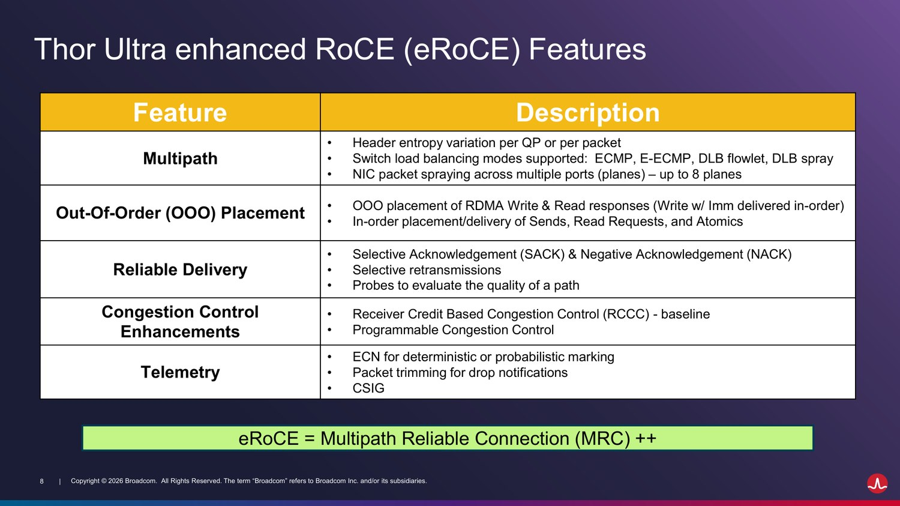
推断Thor Ultra 的真正意义是把"多路径 + 乱序放置 + 接收端信用流控"这套原本属于私有协议的能力，做进了标准 RoCE 网卡。这与 AMD 用 UALoE 跑在以太网上是同一个战略方向：用开放生态追平私有性能。
7.5 一个被忽略的数字：光互联占 10% 计算功耗
一手 Spectrum-X p10："Scale-Out AI Depends on Optics"；AI 工厂中光互联耗电等于 10% 的计算功耗。
一手 p11：CPO 硅光（微环调制器 + TSMC Coupe 3D 堆叠）已量产，收益：10× 更低 MTBI、5× 更低功耗、4× 更少激光器。
一手·推算若一个 100 MW AI 工厂中 10% 是光互联，即 10 MW。CPO 的 5× 功耗改善若成立，可省 8 MW——相当于 8,000 张 1 kW 卡的电力。这是本届"每瓦 token"竞赛中最大的一块单项红利。
7.6 本章结论
推断三条判断：
判断 1（高置信）：五层网络架构会成为行业标准分类。 因为它不是 NVIDIA 的营销发明，而是物理约束的必然结果——不同距离尺度需要不同的物理层、不同的协议、不同的交换芯片。
判断 2（中高置信）：Scale-Up 的开放阵营会在 2027–2028 年拿到 20–30% 份额。 依据：UALoE 已有 72 GPU 完整方案 + Broadcom 交换芯片 + 开放标准；性能差距（1.8 vs 3.6 TB/s）对多数推理负载不构成瓶颈。
判断 3（中置信）：CPO 是 2027 年最确定的技术红利。 10% 的功耗占比 + 5× 改善空间 + 已量产，三个条件同时成立。
第 8 章 封装与 Chiplet：从后端工序到前端架构选择
8.1 本届出现的五种封装技术
| 技术 | 使用者 | 一手应用案例 | 特点 |
|---|---|---|---|
| CoWoS-L | AMD、SambaNova、Microsoft | MI455X（12 die）、SN50、Maia 200（CoWoS-S） | 硅中介层 + LSI 局部桥接，支持大尺寸 |
| Foveros Direct 3D | Intel | Diamond Rapids（HBI，无凸点直接键合） | 垂直堆叠，bump pitch 36 µm |
| UCIe-S | Intel | DMR（die 间）、Wildcat Lake（8 GT/s） | 标准 D2D，面积换成本 |
| EMIB | Intel（被 SK hynix 采用） | SK hynix 2.5D HBM 方案幻灯片同时列 CoWoS-S/R/L 与 EMIB | 嵌入式硅桥，灵活、成本低 |
| 混合键合（HyB / HCB） | Samsung、SK hynix、Fujitsu、AMD | zHBM（WoW+HCB）、HBM ≥20Hi、MONAKA（core die + SRAM die）、MI455X（XCD 3D 键合） | 无凸点、超细 pitch、低热阻 |
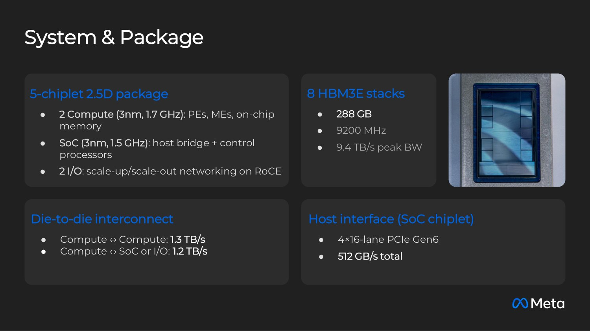
8.2 案例一：AMD MI455X —— 12 颗 die 的分工
一手 AMD MI400 GPU 架构 p5：
2× I/O Die (N3P) → 2× PCIe Gen6 或 3× AMD AI-NIC (UALink)
→ Infinity Fabric 256 GB/s 双向
→ 72 UALoE lanes, 3.6 TB/s 双向
8× Accelerator Complex Die (N2) → 256 个活跃 WGP
→ 3D 混合键合堆叠
2× Fabric and Cache Die (N3P) → 192 通道 HBM4 接口
→ 192 MB 全局 L2
12× HBM4 → 432 GB @ 23.3 TB/s
这个分工的精妙之处：
- XCD 用 N2（最先进节点，只放计算）
- IOD 和 FCD 用 N3P（成熟一档，放 I/O 和 cache）
- XCD 与 FCD 之间是 3D 混合键合（不是 2.5D）→ 高密度、低延迟
- FCD 专门承担 HBM 接口与 L2 → 把"内存子系统"独立成 die，可以按 HBM 代数独立升级
推断这是一个"按功能分节点"的极端案例：只有真正需要 N2 的算力放在 N2 上，cache 与 I/O 留在 N3P。这与 Fujitsu MONAKA 的思路（2nm 只占 <30% 面积）完全一致——只是 AMD 做得更彻底。
MI455X vs MI355X 的代际对比（一手）： - 算力 3.3× - 性能 3.8× - scale-up 带宽 3.5×（3.2 TB/s） - scale-out 带宽 2×（190 GB/s） - 实测 FP4 20 PF、MLA decode FP8 20 TB/s - AI 能效 2.4×
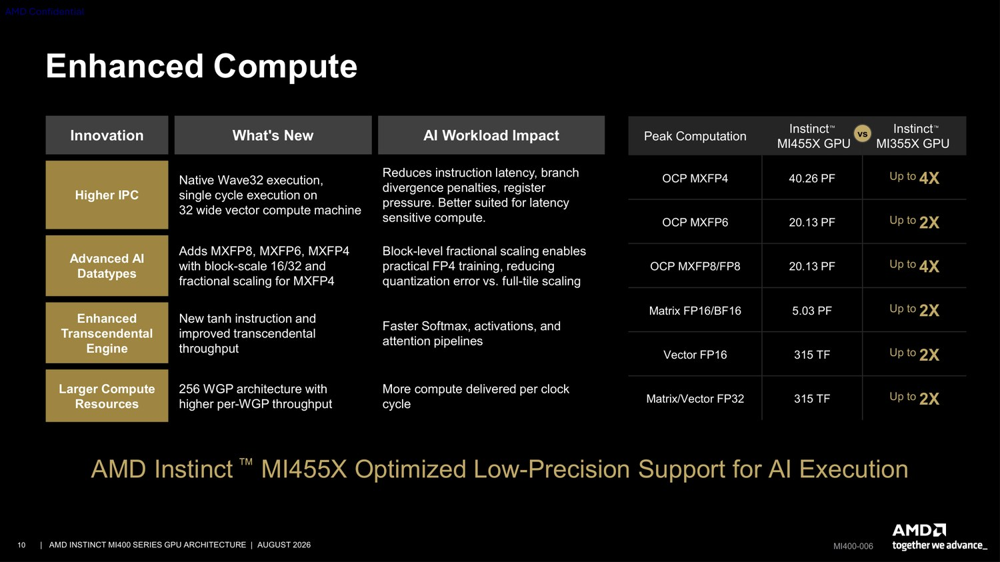
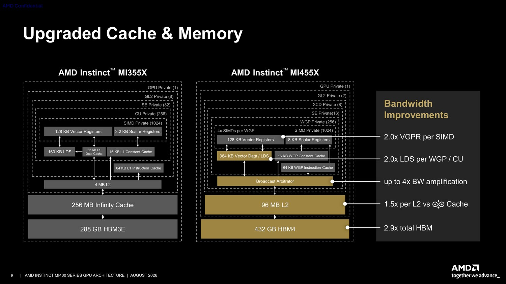
8.3 案例二：Fujitsu MONAKA —— 用 3D 换成本
这是本届最值得其他厂商学习的一个案例，因为它解决的是一个所有人都在面对但很少有人正面回答的问题：2nm 太贵，怎么办？
一手 MONAKA p6–p9：
问题诊断（p6，Fujitsu 自己的估算）：
| 指标 | 7nm → 2nm 的趋势 |
|---|---|
| 频率 | ↗ 提升 |
| 功耗 | ↘ 下降 |
| 成本 | ↗ 急剧上升 |
| Cache 容量 | ↗ 增长放缓 |
解法：3D 多 die 架构
| Die | 节点 | 内容 | 理由 |
|---|---|---|---|
| Core die | TSMC N2P | 计算核心 | 只有这里需要 2nm |
| SRAM die | TSMC N5 | 全部 LLC，通过混合键合与 core die 紧耦合 | SRAM 几乎不随节点缩小（bitcell 冻结在 ~0.021 µm²） |
| IO die | TSMC N5 | 全部 IO，通过硅中介层连 SRAM die | IO 也不需要 2nm |
结果：2nm 硅面积只占总面积 <30%。
配套的四个工程决策（p8）： 1. Core die 放冷却侧（顶部） —— core die 最热，放顶部缩短到散热面的热路径 2. F2F 混合键合 —— 缩短 core die ↔ SRAM die 信号路径 3. 本地 LDO —— 支持逐核 DVFS 4. 3D 供电路径：package → Si interposer → SRAM die（TSV → LDO）→ 混合键合 → core die
额外的成本红利（p9）：LDO 是模拟电路，和 SRAM 一样几乎不缩小。把 LDO 放到 5nm 的 SRAM die 上，避免了在 2nm 上浪费面积。而且把 LDO 放在 FMA 单元正下方，供电更高效稳定。
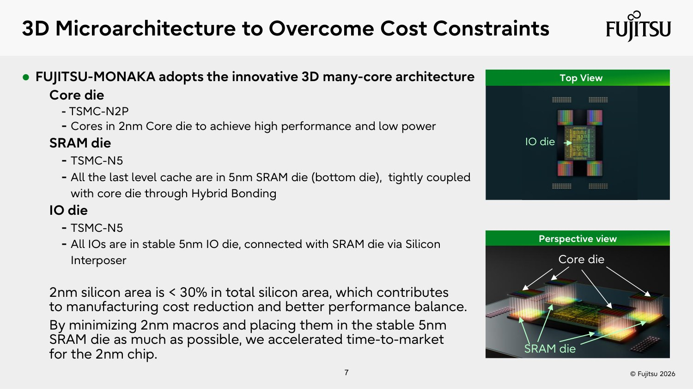
超低电压技术（p10）：
一手 电压降低 30% → 功耗降低 50%（P ∝ CV²f）。Fujitsu 用自研 CAD 工具 + 定制 SRAM 实现稳定超低电压运行。宣称"能效相当于领先 2nm 一个世代"。
最终指标：144 核 × 2 socket = 288 核/节点、Arm v9.3-A、SVE2-256、DDR5 12ch 8000+、PCIe 6.0/CXL3.0 96 lane、2× AI 性能、>50% TCO 下降。样品已开始出货，2027 年量产。
推断MONAKA 是本届"成本工程"的最佳范例。它没有追求任何单项第一，但每一个决策都指向同一个目标：把 2nm 的使用面积压到最小，同时用 3D 堆叠和超低电压把性能/功耗补回来。在一个"内存吃掉 63% BOM"的市场里，这种思路的商业价值可能高于任何规格领先。
8.4 案例三：Intel 的两面 —— DMR 的"全都要"与 Wildcat Lake 的"都不要"
Intel 在本届同时展示了封装光谱的两个极端，这本身就很有信息量。
DMR：18A-P + Foveros Direct 3D + UCIe-S
一手 DMR 幻灯片：
| 项目 | 数据 |
|---|---|
| 核 | 256 核，无 SMT |
| LLC | 1.28 GB |
| 内存 | 16ch DDR5-8000 / MRDIMM-12800，1.6 TB/s |
| I/O | 128 lane，x16 可配 PCIe Gen6 / CXL 3.0 / UPI3 |
| 构造 | 16 core chiplet + 2 fabric hub tile + 4 base tile + 2 IMH tile |
| 封装 | Foveros 3D Direct（HBI）+ UCIe-S |
| 安全 | TDX / TDX Connect / SGX；QAT / DSA / IAA |
| 指令 | AMX / AVX-10 / APX（+16 GPR、NDD 三操作数） |
架构演进线索（一手）：ring → mesh → tiled mesh → modular mesh。核心变化是引入 Fabric Hub（集中 I/O 与内存）和 CBB（core building block），LLC 放在 base tile 里共享，通过 3D Xbar 连接。
18A-P vs 18A 的收益（一手）： - 功耗 −18% - 性能 +9% - 热阻 −10~30% - 通孔电阻 −20~40% - skew 收紧 33% - 新增第 5 档 Vt - PowerBoost 双接触
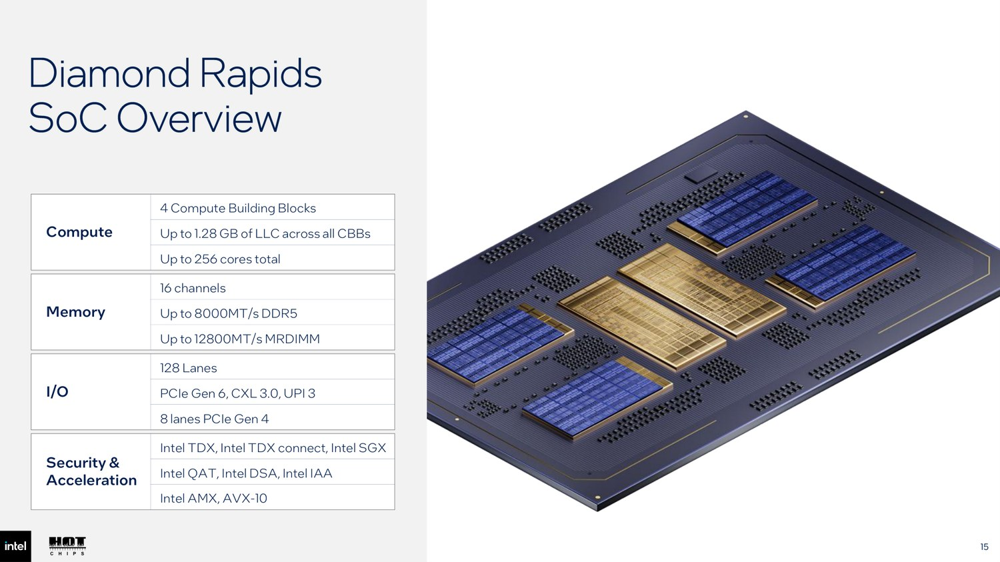
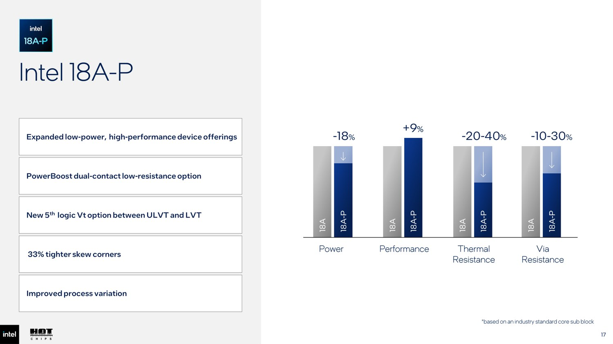
Wildcat Lake：反其道而行
一手 Wildcat Lake 幻灯片：
| 决策 | 具体做法 | 代价 |
|---|---|---|
| 去掉 base die | Foveros（50×25×1.5 mm）→ Organic MCP（35×25×1.23 mm） | 必须用 UCIe 做 D2D |
| UCIe 面积代价 | bump pitch 110 µm（vs Foveros 36 µm）→ D2D 面积 +70% | 接受 |
| 右尺寸计算 | 计算子系统 −38% die area（4Xe→2Xe、3 NPU tile→1、4 P-core→2、96 GB/128b→64 GB/64b） | 性能下降 |
| 右尺寸 IO | IO 子系统 −15% die area（TBT/USB4 3→2、PCIe 4×Gen5+8×Gen4→6×Gen4、去掉摄像头 PHY） | 扩展性下降 |
| UCIe 速率 | 8 GT/s（够用即可） | 带宽有限 |
收益：平台 BOM 全面下降——128b→64b DRAM、8 层→6 层 PCB、集成 WiFi7、集成 PD controller、加 LP E-core 供电轨。宣称 2.7× AI 性能、2.1× 创作性能、64% 更低功耗（对比 Core 7 150U）。
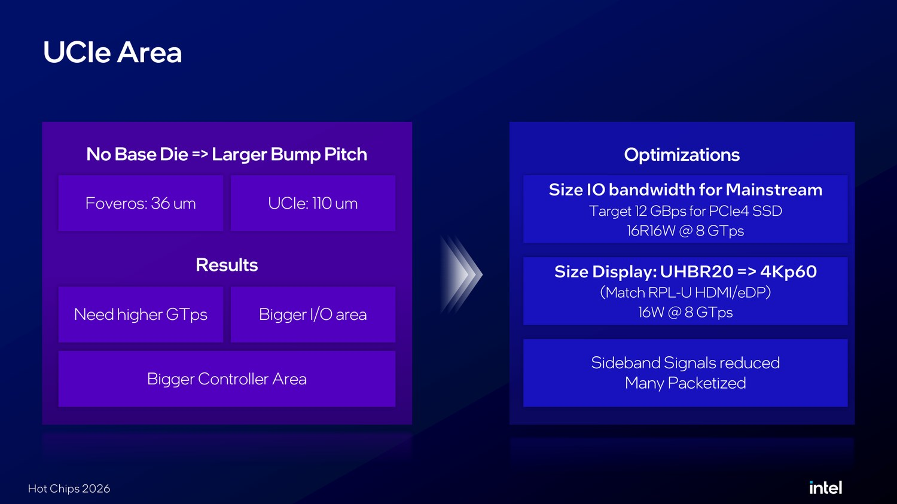
推断Wildcat Lake 是本届唯一一个"反向"案例，它的价值在于证明：先进封装不是普适最优解。在主流/边缘市场，"去掉 base die + 用标准 UCIe 接受 70% 的面积代价"在成本上更划算。这与 MONAKA 的"把 2nm 面积压到 30%"是同一枚硬币的两面：都是"把先进技术用在刀刃上"。
8.5 本章结论
推断三条判断：
判断 1（高置信）：封装已经从"后端工序"变成"前端架构选择"。 证据：AMD 用封装决定 die 分工、Fujitsu 用封装决定节点分配、Intel 用封装决定产品档次（DMR 用 Foveros，WCL 用 MCP）。封装选择现在会反向约束芯片架构。
判断 2（高置信）：没有"最好的封装"，只有"最合适的封装"。 五种技术在 2026 年同时量产，各自服务不同市场： - CoWoS-L → 超大 AI 加速器 - Foveros Direct 3D → 高性能计算 - UCIe-S → 成本敏感的多 die - EMIB → 灵活的中介层替代 - 混合键合 → 存储堆叠与超密互连
判断 3（中高置信）：混合键合会在 2028 年成为 HBM 的默认工艺。 因为 20Hi 是 microbump 的物理天花板，而 AI 对容量的需求没有上限。
第 9 章 能效经济学：从 TPS/MW 到 MBU 到 $/token
9.1 三个指标的演化
| 年代 | 主导指标 | 含义 | 代表表述 |
|---|---|---|---|
| 2016–2022 | FLOPS / TOPS | 峰值算力 | "多少 PFLOPS" |
| 2023–2025 | TPS/MW | 每兆瓦吞吐 | "每兆瓦多少 token" |
| 2026 | TPS/MW + TPS/user + $/token | 三维指标 | "100 MW 能卖多少 token" |
读稿 知乎长文对这个转变的描述最精准："优化目标也从'GPU 能算多少'变成了'这一兆瓦电最后到底能卖多少 Token'。"
为什么必须分裂成三个指标？
因为推理市场本身分裂了： - 批处理/离线：只关心 TPS/MW（吞吐经济学） - 交互式/agentic：关心 TPS/user（交互性），愿意为此牺牲吞吐 - 云厂/买家：最终只看 $/token
一手 NVIDIA 用两个机柜产品对应前两个指标，这是本届最清晰的产品定位： - Vera Rubin NVL72 → 最大化 TPS/MW（"Foundation Platform"） - Groq 3 LPX → 最大化 TPS/user（"Extend Interactivity"，最低延迟推理）
LPU 幻灯片 p4–p5 的二维图把这件事画得很明白：横轴 TPS/MW，纵轴 TPS/user，Hopper NVL8 → Blackwell NVL72 → Vera Rubin NVL72 沿对角线推进，而 LPX 单独占据"高 TPS/user"的极端位置。
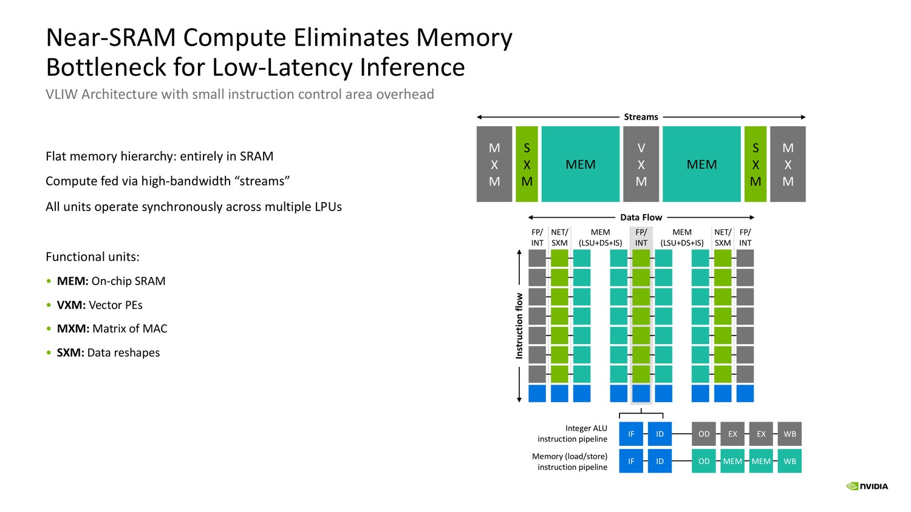
9.2 100 MW 的账本
这是本届最有分量的一张"财务报表"。
一手 NVIDIA Rubin 幻灯片："100 MW AI factory = 2 ZFLOPS NVFP4 推理 / 1.4 ZFLOPS 训练 / 11 PB HBM4 / 800 PB/s"
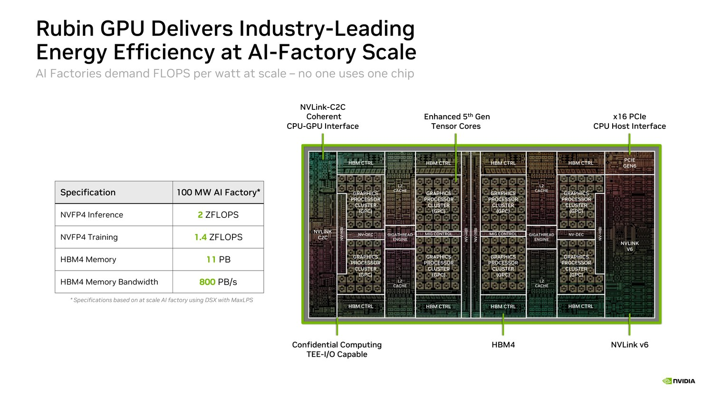
一手·推算把这张账本翻译成单位经济： - 2 ZFLOPS FP4 推理 ÷ 100 MW = 20 EFLOPS/MW - 若以 DeepSeek-V3 级 MoE（671B 参数，FP4 约 336 GB）计，一个 100 MW 工厂可同时驻留 11 PB / 336 GB ≈ 32,700 份模型副本 - 若每份副本在 10K token/s 输出（乐观），理论峰值 3.27 亿 token/s - 折合每 MW 327 万 token/s
这个数字的量级与 Cerebras 宣称的 "up to 10× more token capacity per MW vs CS-3"、SambaNova 的 "256 RDU / 240 kW / 212 TB/s 有效带宽" 在同一数量级区间——说明 2026 年头部厂商的"每兆瓦 token 密度"正在收敛到同一量级。
9.3 MBU：本届最锋利的分析工具
SambaNova 提出了一个我认为应该被行业广泛采用的指标：MBU（Model Bandwidth Utilization）。
一手 SambaNova p4： ``` MBU = 用于权重与 KV cache 的峰值 HBM 带宽占比
tokens/s = (每芯片 HBM 带宽 × MBU × 芯片数) / (每 token 参数字节 + 每 token KV 字节) ``` 核心论断："Token speed follows MBU, not chip count."
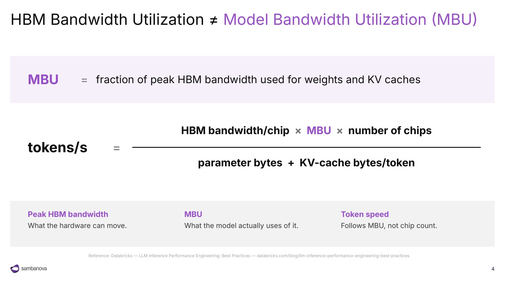
实测数据（一手，DeepSeek-R1 8K/1K，B300 FP4，26 个 InferenceX 测点）：
| 配置 | 峰值 HBM 带宽 | 有效带宽 | MBU |
|---|---|---|---|
| 32× DGX B300 | — | 16 TB/s | 25% |
| 4× NVL72 | — | 28.8 TB/s | 5% |
| SN50 128 RDU（120 kW） | — | 103 TB/s | 43.7% |
| SN50 256 RDU（240 kW） | — | 212 TB/s | 45.1% |
| SN50 512 RDU（480 kW） | — | 377 TB/s | 40.0% |
一手 p7 的关键观察："16 → 64 GPU：4× 峰值 HBM 带宽，但 token speed 只从 4% 提到 25%，MBU 从 69% 掉到 74%（指效率下降）。"
一手 p9 / p41 的结论句："GPUs @500 KW: Power Buys Capacity, not Bandwidth"
这组数据为什么重要？
它直接否定了"堆卡 = 堆带宽"的线性思维。当集群从 32 卡扩到 4×NVL72 时，峰值带宽涨了，但 MBU 从 25% 掉到 5%——因为多卡并行带来的通信开销、同步等待、负载不均，把新增的带宽吃掉了。
推断MBU 的产业含义： 1. 对买家：评估集群时应该问"你的 MBU 是多少"，而不是"你有多少 TB/s"。 2. 对厂商：MBU 是衡量"软硬协同"质量的直接指标。SambaNova 能做到 40–45%，靠的是 dataflow 架构 + persistent decoder kernel（无 kernel launch 开销）+ 集合通信与计算重叠。 3. 对 NVIDIA：MBU 低不是硬件问题，是通用架构的固有代价——GPU 要服务所有负载，就不可能对某个负载做到极致。这正是专用芯片的存在理由。
9.4 能量阶梯：每一层搬运的定价
一手 d-Matrix p8 给出的 energy ladder 是本报告认为最该被记住的一张表：
| 环节 | 能耗 / bit | 相对 SRAM |
|---|---|---|
| 片上 SRAM | ~50 fJ | 1× |
| 片上走线 | ~35 fJ/mm | — |
| 3D 垂直 I/O | 0.3–0.4 pJ | 6–8× |
| Interposer 走线 | ~500 fJ/mm | — |
| 2.5D HBM4（系统级） | 2.5 pJ + 3 pJ（片上） | 50–110× |
见上文图 20（能量阶梯）。
一手·推算把这张表翻译成"搬运成本"： - 一次片上 SRAM 访问：50 fJ/bit - 一次 HBM4 访问（含 PHY + interposer + 片上）：5.5 pJ/bit - 相差 110×
若一个 GEMM 需要读 1 GB 权重（8e9 bit），从 HBM 读的成本 = 8e9 × 5.5e-12 = 44 mJ；若这些权重在片上 SRAM，成本 = 0.4 mJ。差 43.6 mJ。
在 1,000 token/s 的解码场景下，每秒读 1 GB 权重 → 44 W 仅用于搬运权重。这就是为什么 Cerebras（全片上）和 LPU（全 SRAM）在低延迟推理上有结构性优势。
9.5 功耗的三条下降路径
读稿 雪球综述的归纳准确："当电力成为硬约束，每瓦性能的提升只有三条路径：更先进的制程、更激进的封装、更聪明的系统架构。"
本报告在此基础上补充第四条，并在括号内给出一手证据：
| 路径 | 一手案例 | 量化收益 |
|---|---|---|
| ① 制程 | Intel 18A-P | 功耗 −18%、性能 +9% |
| ② 封装 | 混合键合 / 3D 集成 | I/O 功耗 −70%（zHBM）、3D IO 比 2.5D 低 10× |
| ③ 系统架构 | 智能功率平滑、液冷、800 VDC | 峰值功率 −13% → 多装 40% GPU |
| ④ 电压/电路（新增） | Fujitsu 超低电压 | 电压 −30% → 功耗 −50% |
推断第四条路径被严重低估。在一个"内存吃掉 63% BOM"的世界里，制程的边际收益已经很小（第 4.3 节），而电压/电路优化是唯一不依赖先进节点的功耗杠杆。Fujitsu 的 ">50% TCO 下降" 如果成立，其商业价值可能超过任何一颗新 GPU。
9.6 本章结论
推断2026 年的能效竞争已经不是"谁的瓦数低"，而是"谁的瓦数用在了对的地方"。
三个可操作的判据： 1. MBU > 40% 是"软硬协同合格"的门槛； 2. 能量阶梯上每下降一级，等效于制程前进 1–2 代； 3. $/token 是唯一终极指标，TPS/MW 与 TPS/user 都只是它的中间变量。
第 10 章 系统级设计：机柜成了新的"芯片"
10.1 三个机柜的解剖
AMD Helios
一手 AMD MI400 系统架构 p5–p8：
| 项目 | 数据 |
|---|---|
| 规格 | 44OU，ORW-HPR |
| GPU | 72× MI455X |
| 计算托盘 | 18× 1OU（每托盘 4× MI455X + 1× Venice SP7 + 最多 3× Vulcano NIC） |
| 交换托盘 | 6× 1OU（每托盘 2× 512 端口 200G UALoE ASIC） |
| 聚合 | 31 TB HBM4 / 1.7 PB/s HBM 带宽 / 260 TB/s scale-up / 43 TB/s scale-out / 2.9 EF |
| 供电 | 50 VDC LC busbar，冗余电源 |
| 冷却 | 后部盲插快接（BlindMate QD）液冷，交换托盘 ~7 kW |
| 布线 | 4× cable cartridge |
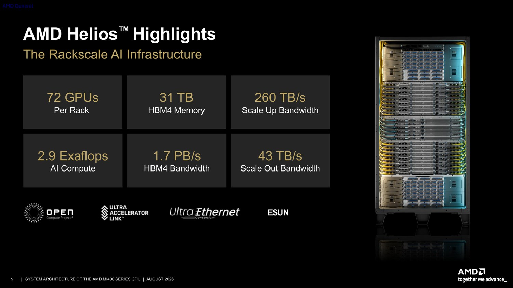
NVIDIA Vera Rubin NVL72
一手 多份幻灯片拼合： - 72× Rubin GPU + 36× Vera CPU + 18× BlueField-4 - 45 °C 进水温度液冷、无需冷机、800 VDC、无 retimer、无电缆托盘 - 智能功率平滑：峰值功率降 13% → 同样 provisioned 瓦数下多装最多 40% GPU - 第二代 RAS 引擎：零停机健康检查 - NVLink 6：72 GPU 单域、3.6 TB/s per GPU
报道 百度百科补充（未在一手 PDF 中出现）：整机柜功耗 190–230 kW、新增 PCB Midplane 替代铜缆、PCB 层数 36–44 → 46–52、100% 液冷。这些数据应视为供应链信息，非会议披露。
Cerebras CS-4 Nexus
一手 Cerebras p13–p25： - 每机柜 3 个 wafer-scale backpack - 供电在前、计算在后、可插拔 backpack 在后部 - DC/DC 转换器直接放在晶圆上，无 PCB → 供电路径 ~0.5 mm（vs GPU 的 ~50 mm）→ 100× 改善 - 54.5 VDC 母线，输入最高 277 VAC，每 backpack 最多 30 个电源模块，30 A 断路器 - 冗余配置灵活：5+1 / 4+1 / 3+1 / 4+2 - 集成水冷：带阀干式快接、流量调节执行器、漏液检测模块（可切断 AC 供电）、能量计
CS-4 的代际对比（一手）：
| 指标 | CS-3 | CS-4 | 倍数 |
|---|---|---|---|
| AI 算力 | 125 PFLOPS | 750 PFLOPS | 6× |
| 内存容量 | 44 GB | 132 GB | 3× |
| 内存带宽 | 21.6 PB/s | 129.6 PB/s | 6× |
| Fabric 带宽 | 26.7 PB/s | 160.5 PB/s | 6× |
| IO 带宽 | 1.2 Tb/s | 7.2 Tb/s | 6× |
| IO 延迟 | 5 µs | 2 µs | 2.5× |
| 晶圆数 | 1× WSE-3 | 3× WSE-3 Turbo | 3× |
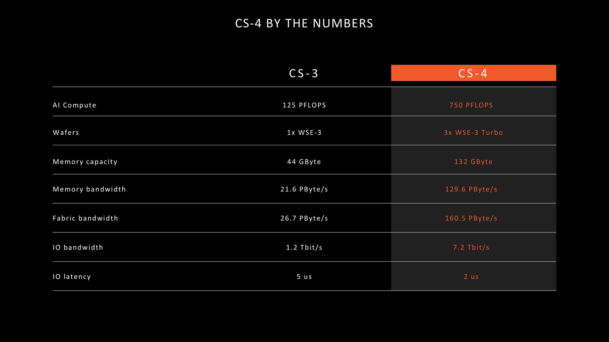
10.2 三个机柜的共同语言
把三个机柜放在一起，可以看到五个共同的设计决策：
| 决策 | Helios | Vera Rubin NVL72 | CS-4 Nexus |
|---|---|---|---|
| 直流母线 | 50 VDC | 800 VDC | 54.5 VDC |
| 液冷 | 后部盲插 QD | 45 °C 进水、无冷机 | 集成水冷 + 漏液检测 |
| 无电缆/少电缆 | 4× cable cartridge | 无电缆托盘 | 无 PCB（电源直接在晶圆上） |
| 模块化托盘 | 1OU 计算/交换托盘 | cable-free trays | 可插拔 backpack |
| 故障隔离 | 备用网络平面 | 第二代 RAS 引擎 | 独立 backpack |
推断这五项的共同指向是：机柜正在变成一个"大型封装"。
传统上，"封装"的边界是芯片外壳；现在，供电、冷却、布线、故障隔离都成了机柜级的设计变量，而且它们的约束会反向传导到芯片设计（例如 800 VDC 决定了电源转换必须在托盘级完成，进而决定了 GPU 的供电引脚布局）。
这与第 8 章的结论是同一件事的两个尺度：封装边界从 die 扩展到 package，再扩展到 rack。
10.3 一个被低估的指标：进水温度
一手 Vera Rubin：45 °C 进水温度，无需冷机（no chillers）。
为什么 45 °C 是关键数字？
传统数据中心冷冻水供水温度约 12–18 °C，需要冷水机组（chiller）把温度降下来，而冷机本身消耗数据中心总电力的 10–25%。
45 °C 进水意味着： - 可以用干冷器（dry cooler）或冷却塔直接散热，不需要冷机 - 在多数气候区可实现全年自然冷却 - 数据中心 PUE 可从 1.3–1.4 降到 1.1–1.2
一手·推算若一个 100 MW AI 工厂的 PUE 从 1.35 降到 1.15，则总用电从 135 MW 降到 115 MW，省 20 MW。以每 MW 约 327 万 token/s（第 9.2 节推算）计，等效于多出 6,540 万 token/s 的产能——这比任何单芯片的性能提升都大。
推断这就是为什么 NVIDIA 把"进水温度"放进 Hot Chips 的幻灯片：在电力成为硬约束的时代，散热方案的能效等价于算力。
第 11 章 产业格局：八条带置信度的判断
本章全部为 推断，每条附置信度与可证伪条件。置信度定义：高 = 有直接一手证据支撑；中高 = 有多条间接证据；中 = 逻辑推演；低 = 猜测。
判断 1：内存厂商正在从"标准件供应商"变成"定制 IP 供应商"（置信度：高）
证据链：
- Samsung 三阶段路线把 MC、RAS、telemetry、repair、PE 搬进 base die（第 5.5 节）
- Samsung LPDDR5X-PIM 已量产，且提供 SDK + 模拟器（LP5X-PIM Sim, arXiv:2606.00636）
- SK hynix 明确"cHBM 定制 B-die 逻辑，共享标准 C-die 堆叠"
- base die 用 4nm 逻辑工艺，与 xPU 的 3nm 只差一档
含义：内存竞争不再只是"DRAM 制造 + 良率"，而是"DRAM 制造 + 逻辑设计 + 先进封装 + EDA + 接口标准 + 软件工具"的综合竞争。
可证伪条件：若 2027–2028 年主流 HBM4E/HBM5 产品仍是纯标准件（无定制逻辑），则此判断错误。
判断 2：HBM 的相对价格不会回到 2023 年水平（置信度：中高）
证据链： - 同容量 3× 硅面积是物理常数（Micron） - 扩产周期 ≥2 年 - BOM 占比 52%→63% 说明需求端已接受这个价格结构 - 12Hi→16Hi 的几何压缩意味着单位容量成本还在上升（更薄 die、更窄 gap → 更低良率）
可证伪条件：若 2027 年 HBM4 现货价跌破 2024 年均价，则此判断错误。
判断 3：Scale-Up 的开放阵营会在 2027–2028 拿到 20–30% 份额（置信度：中高）
证据链： - UALoE 已有完整 72 GPU 方案 + Broadcom 交换芯片 + 开放标准（第 7.2 节） - 性能差距（1.8 vs 3.6 TB/s）对多数推理负载不构成瓶颈 - 内存吃掉 63% BOM → Scale-Up 网络成本被放大审视 - Thor Ultra 的 eRoCE 证明"开放协议可以达到 96–98% 线速"
可证伪条件：若 2027 年底 UALoE 无任何非 AMD 的大规模部署，则此判断错误。
判断 4：zHBM 不会早于 2029 年商用（置信度：中）
证据链： - 技术可行（Samsung 已给出完整工艺与设计流程） - 但需要 xPU 厂与 DRAM 厂共享 RTL、DFT、时序收敛（Samsung 幻灯片明确 "unified SoC-DRAM design and verification flow is essential"） - 这是组织问题而非技术问题，历史上类似深度协同耗时远超预期
可证伪条件：若 2028 年出现 zHBM 量产产品，则此判断错误。
判断 5：HBF 在 2028 年前不会成为主流层级（置信度：中高）
证据链： - OXMIQ 自己列出 6 条软件障碍（第 6.3 节） - "MoE Experts Pool is not yet available in vLLM" - 适用区间窄（大 batch + 高稀疏 MoE + 长上下文） - 24 h@85 °C retention 要求 host-managed lifecycle
可证伪条件：若 2027 年 vLLM/SGLang 出现原生 HBF backend 并有生产部署，则此判断错误。
判断 6：3D-DRAM 会在 2027 年小规模商用，2029 年规模化（置信度：中）
证据链： - d-Matrix Raptor 已给出完整硅验证与三个工程难题的解法 - 32 GB/卡、72 卡 scale-up 的配置足以服务 3T 级模型 - 但 Tj 105 °C、retention 4 ms、良率仍是量产风险 - d-Matrix 自己说 2027 年商用
可证伪条件：若 2027 年 Raptor 未出货，或出货后第三方实测未达宣称的 50%，则此判断错误。
判断 7：CPU 的价值会被重新定价，但不会回到 2010 年的地位（置信度：中高）
证据链： - Agentic 工作流确实把 CPU 拉回关键路径（第 3 章） - Arm 在 AI 服务器主机 CPU 已占 >60% - 但 CPU 的算力占比仍在下降——它回归的是"调度价值"而非"算力价值"
可证伪条件：若 2028 年 AI 服务器中 CPU 的 BOM 占比超过 20%，则此判断错误（当前约 9–13%）。
判断 8：2027–2028 年最大的技术红利在 CPO 与混合键合，不在制程（置信度：中高）
证据链： - 光互联占 AI 工厂 10% 功耗，CPO 可改善 5×（第 7.5 节） - 制程的边际成本收益已经很小（逻辑只占 BOM 9%） - 混合键合是 20Hi 的唯一路径（第 5.4 节） - 两者的产业化时间点都在 2027–2028
可证伪条件：若 2027 年出现不依赖 CPO/混合键合的颠覆性功耗改善方案，则此判断错误。
第 12 章 反证与风险：本报告可能错在哪里
一份负责任的分析必须给出自己的反面。本章列出五类可能推翻前述结论的风险。
12.1 规模数字的口径陷阱
这是本届最容易被误读的地方。以下数字全部带强口径限定：
| 数字 | 出处 | 真实含义 | 常见误读 |
|---|---|---|---|
| 512,000 GPU | Spectrum-X Multiplane | 拓扑可支持上限（512 口 × 200G × 8 plane × 4 rail 的理论值） | "已部署 51 万卡集群" |
| 2,000× 内存带宽 | Cerebras CS-4 | 片上 SRAM 带宽（43,200 TB/s）vs 片外 HBM 带宽（22 TB/s），口径不对等 | "Cerebras 比 Rubin 快 2000 倍" |
| 30× AI 工厂吞吐 | Rubin | 原页标注 "*Unofficial Results. Pending SemiAnalysis Review"；对比基线为 Hopper | "Rubin 比 Hopper 快 30 倍"（实为 TPS/MW，且未评审） |
| 11,000 TPS | NVIDIA LPU | Gemma 4 31B、coding benchmark、单机柜 | "LPU 通用吞吐 11,000 TPS" |
| 3,400 TPS @ 100K | 百度百科 | 与上一条 benchmark 不同 | 两个数字混用 |
| 20× 带宽密度 | d-Matrix | 硅面积归一化后的带宽（GB/s/mm²），不是绝对带宽 | "Raptor 比 HBM 快 20 倍" |
| 100 TB/s | d-Matrix | 单卡 3D-DRAM 峰值带宽 | "单卡 100 TB/s 可用带宽"（实际需扣除 refresh 1.37% 等开销） |
| 2.9 EF | Helios | 72 GPU 机柜的 FP4 算力 | "单柜 2.9 EFLOPS FP16" |
| 121 EF | TPU8t | 每 pod 9,600 芯片的 FP4 算力 | "单芯片 121 EF" |
推断建议的阅读原则：看到任何"倍数"或"规模"数字，先问三个问题——(a) 对比基线是什么？(b) 是峰值还是实测？(c) 分母是什么（每芯片/每机柜/每 pod/每 MW）？
12.2 一手材料的覆盖缺口
本报告的 36 份 PDF 覆盖了核心演讲，但缺 15 份： - 11 篇海报（posters）——可能包含前沿探索性工作 - 开场致辞（GC/PC Welcome） - TCMM 颁奖 - 闭幕
推断海报部分的风险在于：如果某篇海报提出了颠覆性方案（例如新的内存器件、新的互连物理层），本报告会完全遗漏。 建议在 2026 年 11 月下旬官方解禁后补齐。
12.3 厂商自测数据的系统性偏差
本报告中大量性能数字来自厂商自测，且存在系统性偏差模式：
| 偏差类型 | 案例 | 风险 |
|---|---|---|
| 选择性基线 | Rubin "30× vs Hopper"（跳过 Blackwell） | 高估代际提升 |
| 选择性负载 | LPU "11,000 TPS"（Gemma 4 31B coding） | 不代表通用负载 |
| 口径不对等 | Cerebras 片上 vs 片外带宽 | 高估 2000× |
| 理想配置 | d-Matrix "72 卡装下 Kimi K3 @1M"（4-bit 权重 + 8-bit KV） | 实际可用性存疑 |
| 实验室条件 | Samsung PIM "3.01×"（320 token 上下文、SINT8/SINT4） | 短上下文，不代表长上下文 |
推断应对方法：优先相信"归一化后"的数字（如 d-Matrix 的 GB/s/mm²、SambaNova 的 MBU），因为归一化本身就消除了部分口径操纵空间。
12.4 技术路线的反转风险
三条可能被推翻的技术判断：
风险 A：HBM 可能不需要混合键合就能到 20Hi。 若 SK hynix 或 Samsung 找到新的 underfill 材料或 die 减薄工艺，使 microbump + MUF 能撑到 20Hi，则第 5 章的"20Hi 必须混合键合"判断失效。
风险 B：光学互连可能提前取代铜互连。 若 CPO 成本下降快于预期，Scale-Up 可能在 2028 年就转向光互连，届时 UALoE vs NVLink 的"铜缆之争"将失去意义。
风险 C：模型架构可能改变内存需求。 若出现"权重共享 + 超稀疏激活"的新架构（如 1% 激活率的 MoE），则容量需求会大幅下降，HBF/大容量路线的价值会被削弱。
12.5 商业与地缘风险
读稿知乎长文提出了一个尖锐问题："但是继续依赖台湾的供应商，可靠性能有保障吗？"
本报告认为这是本届会议最大的未讨论议题。所有先进封装（CoWoS）、所有先进制程（N3/N2）、绝大部分 HBM 产能都集中在台积电与韩国。一旦供应链中断，本报告描述的所有技术路线都会同时失效。
推断这也解释了为什么"封装多极化"（第 8 章）如此重要：EMIB 进入 SK hynix 方案，本质上是一种供应链风险对冲。 同样的逻辑也适用于 UALoE 用 Broadcom 交换机、Arm 自研芯片、OpenAI 自研 ASIC。
第 13 章 路线图推演：2027–2030
全部为 推断，基于第 1–12 章的一手证据推演。
13.1 时间轴
| 时间 | 内存 | 算力 | 互连 | 封装 |
|---|---|---|---|---|
| 2026 H2 | HBM4 12Hi 量产；LPDDR5X-PIM 量产；HBF 规范 v0.7.0 | Rubin / MI455X / TPU8 / Maia 200 / MTIA 400 出货 | NVLink 6、UALoE 72 GPU、Spectrum-X Multiplane 就绪 | CoWoS-L 主流；Foveros Direct 3D 量产 |
| 2027 | HBM4 16Hi 量产；HBM4E 送样；混合键合进入 ≥20Hi 开发 | DMR（256 核）、Venice、MONAKA、Arm AGI 上市；Raptor 商用 | UALoE 规模部署；Thor Ultra 放量；512k GPU 集群出现 | EMIB 进入 HBM 供应链；UCIe-S 普及 |
| 2028 | HBM4E 量产（14 Gbps / 0.5 W·mm⁻²）；HBF 首批产品 | 3D-DRAM 加速器规模化；CPO 成为 Scale-Out 默认 | 光互连进入 Scale-Up 试点 | 混合键合成为 HBM 默认工艺 |
| 2029–2030 | HBM5（>28 Gbps / >2 W·mm⁻²）；zHBM 首批产品 | 内存层级五层化稳定（HBM/3D-DRAM/HBF/CXL/SSD） | Scale-Across 跨洲互联常态化 | 封装与制程选择完全解耦 |
13.2 三个关键拐点
拐点 1（2027）：16Hi 量产 —— HBM 的"最后一次不换方法"
若 16Hi 良率达标（业界普遍预期 70–80%），则 HBM 还能按现有路线走一代；若不达标，混合键合的时间表会提前 1–2 年。
拐点 2（2028）：混合键合成为默认 —— 封装成本结构反转
混合键合的设备投资远高于 MR-MUF。一旦成为默认工艺，HBM 的资本密集度会再上一个台阶，进一步抬高行业进入门槛。这对三家现有厂商是利好，对新进入者是壁垒。
拐点 3（2029）：zHBM 首批产品 —— 计算与存储的组织边界重构
若 zHBM 落地，则"GPU + HBM"这个说法会开始失效。届时竞争单位可能变成"计算-存储一体化模块"，而这需要 xPU 厂与 DRAM 厂成立合资或深度绑定。这可能是 2030 年代半导体产业最重要的组织变化。
13.3 一条反向推演：如果"少搬数据"路线全面胜利会怎样？
假设 2029 年 3D-DRAM + PIM + 全片上 SRAM 三条路线同时成熟，HBM 的需求会怎样？
推断本报告的判断是：HBM 的绝对需求仍会增长，但增速会分化。 - 训练：仍以 HBM 为主（需要大容量 + 高带宽 + 可寻址） - 低延迟推理：转向 3D-DRAM / 全片上 SRAM - 大容量推理：转向 HBF / CXL - 边缘：转向 PIM
也就是说，HBM 会从"唯一选择"变成"训练与通用场景的选择"。这对三家 HBM 厂商不是灾难（总量仍在增长），但对"只做 HBM"的厂商是结构性风险——这也解释了为什么 Samsung 要做 zHBM、SK hynix 要做 I-HBM、Micron 要做"分层内存系统"。
附录 A：一手数据总表
全部来自 36 份原始 PDF，按厂商归类。可用于快速查数。
A.1 NVIDIA
| 项目 | 数据 |
|---|---|
| Rubin 平台框架 | 七芯片五机柜：Vera Rubin NVL72 / Vera CPU Rack / Groq 3 LPX / Spectrum-6 SPX / Vera BlueField-4 STX |
| Rubin 宣称 | TPS/MW 30×（vs Hopper，标注 "*Unofficial"）、交互性 10×、vs GB300 2× |
| NVLink 6 | 3.6 TB/s per GPU all-to-all、72 GPU 域、130 TFLOPS 网络内计算、3× 低延迟、10× 包速率 |
| 稀疏 | 2:4 稀疏 NVFP4；sparsify attention → SoftMax/BMM2 2× |
| 基础设施 | 45 °C 进水、无冷机、800 VDC、无 retimer、无电缆托盘 |
| 功率平滑 | 峰值功率 −13% → 同瓦数多装 40% GPU |
| 100 MW 账本 | 2 ZFLOPS FP4 推理 / 1.4 ZFLOPS 训练 / 11 PB HBM4 / 800 PB/s |
| Vera CPU | 88 Olympus / 176 线程；10-wide decode、16 instr/cycle；64 KB L1I / 96 KB L1D / 2 MiB L2；164 MB L3；SCF 3.4 TB/s bisection；1.5 TB SOCAMM LPDDR5X @ 1.2 TB/s；4.3 TB/s off-die；1,800 GB/s NVLink-C2C；x16 PCIe Gen6 256 GB/s；CXL 3.1 |
| Vera 性能 | SPECrate2026_int 1.2–1.8× vs EPYC 9755（agentic 1.8× / 数据 1.5× / EDA 1.7×）；Speedometer +24%（去渲染 4.5×）；p99 流式延迟 6× vs Turin |
| Vera 机柜 | 256 Vera / 22,528 Olympus 核 |
| Groq 3 LPX | 256 LPU / 128 GB SRAM / 40 PB/s / 640 TB/s scale-up per rack |
| LPU 架构 | 全 SRAM 平坦层级；MEM/VXM/MXM/SXM；VLIW；软件调度到 CLK 周期；无 kernel 边界、无 MEMBAR；跨 LPU lockstep |
| LPU 性能 | 11,000 TPS（Gemma 4 31B coding）；4× 更快（100K 上下文，Artificial Analysis） |
| BlueField-4 | 7 Tb/s；Grace 64 核 Neoverse V2 @1.7 GHz、SPECint 220（6× BF3）、LPDDR5 275 GB/s；CX-9 800G、200G PAM4、200 MPPS、25 MIOPs |
| BF4 对比 | vs 云 DPU：200 Gb/s → 7 Tb/s；功耗 1/4（不需为每 NIC 配 CPU/内存） |
| Storage-Scale | 3.2 Tb/s、10× IOPS、5× 能效；NVMe-oF：8 核 1.6 Tb/s、16 核 20M IOPS |
| Spectrum-X | ToR 2k → Multi-Rail 8k → Multiplane 512k GPU；100T 交换；512×200G；8 plane；4 rail |
| SPX 收益 | 省 1.7× 交换机；故障保 90% 带宽；检测 2.68 ms（400×）、恢复 100 ms（11×）；1.6× goodput |
| SPX 对比 OTS | 1.3× 低 jitter、2.2× 多租户带宽、1.6× RDMA 带宽；多租户训练 1.9×；NCCL 最高 14× |
| CPO | 微环调制器 + TSMC Coupe 3D 堆叠；10× 低 MTBI / 5× 低功耗 / 4× 少激光器；光互联 = 10% 计算功耗 |
| Spectrum-XGS | 1.9× 多站点性能；800 Gb/s/端口；102.4 Tb/s |
| NVLink Fusion | 3.6 TB/s per XPU；72 XPU 单域；18 计算托盘 + 9 交换托盘 + 1 spine；无电缆无软管；45 °C；100% 液冷 |
A.2 AMD
| 项目 | 数据 |
|---|---|
| MI455X 组成 | 2× IOD（N3P）+ 8× XCD（N2）+ 2× FCD（N3P）；CoWoS-L；3D 混合键合 XCD |
| 算力 | 40.26 PF MXFP4 |
| 内存 | 432 GB HBM4（12 stacks）；23.3 TB/s；192 通道 HBM4 接口 |
| Cache | 192 MB 全局 L2 |
| 计算 | 256 个活跃 WGP |
| I/O | 2× PCIe Gen6 或 3× AI-NIC（UALink）；Infinity Fabric 256 GB/s 双向；72 UALoE lanes，3.6 TB/s 双向 |
| 新特性 | Tensor Data Mover、Topology Aware DMA、L2 Multicast、更低 dispatch 延迟、Transcendental Engine |
| MI455X vs MI355X | 算力 3.3×、性能 3.8×、scale-up 3.5×（3.2 TB/s）、scale-out 2×（190 GB/s）、实测 FP4 20 PF、MLA decode FP8 20 TB/s、能效 2.4× |
| Helios | 44OU；72 GPU；31 TB / 1.7 PB/s / 260 TB/s scale-up / 43 TB/s scale-out / 2.9 EF |
| Helios 构造 | 18× 1OU 计算托盘 + 6× 1OU 交换托盘；50 VDC busbar；后部盲插 QD 液冷；4× cable cartridge |
| UALoE | 每 GPU 1.8 TB/s/dir；每 MI455X 18× 800 Gbps 适配器；每 ASIC 10.8 TB/s/dir；2× 512 端口 200G |
| 系统组件 | EPYC Venice 96 核 / 1.6 TB/s；Pensando Vulcano 800 Gbps / 200M pps |
A.3 Google
| 项目 | TPU8t | TPU8i |
|---|---|---|
| 定位 | 训练 | 推理 |
| 算力 | 121 EF FP4（每 pod 9,600 芯片） | 未披露 |
| 内存 | 2 PB 共享 HBM | 288 GB HBM3E 12-Hi |
| 片上 | 未披露 | 384 MB SRAM（2.4×） |
| ICI | 6×1.6 Tb/s per chip | 19.2 Tb/s（2×） |
| I/O | 2.4 TB/s per chip | — |
| 拓扑 | — | Boardfly：36 组全互联 = 1,152 芯片/pod，最大 7 跳（vs 3D torus 16 跳） |
| 其他 | 2× perf/W vs Ironwood；水冷光学（"an ML first"）；Virgo 134,400 TPU / 47 Pb/s / 1.6 YottaFlops | CAE 移入 ICI I/O die → 片上延迟 5× 改善 |
| SRAM vs HBM | 带宽 150–200 vs 10–15 TB/s；延迟 1–2 vs 150–200 ns；能耗 0.1–0.5 vs 2–5 pJ/bit | 同 |
| AI 辅助设计 | MXU：−6% 功耗 / −5.8% 面积 → +6% TFLOPs；SparseCore：−13% 面积 → +10% TFLOPs | 同 |
A.4 Microsoft Maia 200
| 项目 | 数据 |
|---|---|
| 算力 | FP4 10,145 TOPS / FP8 5,072 / BF16 1,268 |
| 内存 | 216 GB（6 stacks）；7 TB/s |
| 片上 | 272 MB SRAM @ 80 TB/s |
| 主机 | 64 GB/s；PCIe Gen6 x8 |
| 后端 | 1,400 GB/s（28×400G） |
| 面积 / 封装 | ~820 mm²；75×75 mm |
| 功耗 / 工艺 | 750 W；TSMC 3nm；CoWoS-S |
| 架构 | SDLA（Software Defined Local Access Dataflow）；TTU/TVP/TCP tile；TSRAM/CSRAM 层级 |
| 网络 | 自研 ANC NIC + ATL transport（<8 pJ/b、<1 µs，影响 UET 与 MRC 标准）；FCQ 拓扑；统一以太网扩展至 6k 加速器 |
A.5 OpenAI Jalapeño
| 项目 | 数据 |
|---|---|
| 算力 | 13.4 PF mxfp4×mxfp4 / 6.7 PF mxfp8×mxfp4 / 3.4 PF mxfp8×mxfp8 |
| 内存 | 216 GiB HBM4；15.4 TB/s |
| 功耗 | 700 W |
| 网络 | 本地 128 ASIC @600 GB/s；全局 2048 @200 GB/s |
| 系统 | 2048 ASIC = 27 EFLOP/s / 32 PB/s / 432 TiB |
| 架构 | 64 个 core slice，各带 HBM slice 本地视图 + 共享 NoC + 集合通信网络；Grey/TH6 "半扁平" 两级 Clos |
| 研发周期 | 9 个月 RTL→tapeout（2024-10 概念 → 2025-02 RTL → 2025-07 freeze → 2025-11 tapeout → 2026-05 硅 + Codex 跑通） |
| 设计哲学 | "dark silicon is cheaper than idle accelerators"；三种硬件区制（prefill / draft / verify） |
| AI 辅助 | 矩阵单元 10% 面积、SIMD 8% 面积由 AI 生成；BF16 mul 56% / FP4 dot 21% / FP32 acc 10% |
| 软件 | GPT-OSS 比专家手写 attention/MoE 块快 1.5–1.8×；STP vs GB300 MTP |
| 代际 | Gen2 接近 tapeout，Gen3 规划中 |
A.6 Meta MTIA
| 项目 | MTIA 300（2025） | MTIA 400（2026+） |
|---|---|---|
| 定位 | 首颗 DLRM 训练芯片 | DLRM 推理 + GenAI 训练 |
| 工艺 | 3nm compute + 5nm IO + 6× HBM3E | 5 chiplet 2.5D：2× compute（N3 1.7 GHz）+ 1× SoC（N3 1.5 GHz）+ 2× IO |
| 算力 | 1.112 PF FP8 | 3 PF FP16 / 6 PF FP8-MX8 / 12 PF MX4 |
| 内存 | 216 GB HBM3E @ 6.1 TB/s | 288 GB HBM3E（8 stacks @ 9200 MHz）@ 9.4 TB/s |
| I/O | 1.2 TB/s 片上 RDMA | D2D 1.3 TB/s(C-C) / 1.2 TB/s(C-SoC/IO)；4×16 PCIe Gen6 = 512 GB/s；scale-up 1.2 TB/s；scale-out 100 GB/s |
| 结构 | 72 PE（12×6）+ 16 ME；667 W 液冷 | 8×6 PE/chiplet + 1 冗余行；1×6 ME；12 ME/device |
| MX 支持 | — | 16 元素/共享指数（vs OCP 32）；MX4/MX8/MX8S；64×128B 数据 tile + scales（MX8 512B / MX4 1KB） |
| 代际提升 | — | vs MTIA 300：FP16 5×、容量 1.3×、带宽 1.5×、I/O 1.0×；vs MTIA 200：FP16 15.4×、DRAM 带宽 46×、PCIe 16×、片上 SRAM 带宽 5× |
| 系统 | — | 4 ASIC/托盘，72 ASIC scale-up 域 |
A.7 内存厂商
Micron
| 项目 | 数据 |
|---|---|
| HBM 世代表 | HBM1→HBM4：channels 8→32、pseudo-ch 16→64、PC 宽度 128→32 bit、burst 2→8、prefetch 恒 256 bit、Data I/O 1024→2048、速率 1→11 Gbps、带宽 128→2800 GB/s、density 2→24 Gb、容量 1→24+ GB |
| Bank | HBM3E 128 banks/die → HBM4 256 banks/die |
| 硅面积 | 同容量 HBM3E ≈ 3× DDR5；8× HBM4 12-high = 12,344 mm²，>8× 典型 GPU |
| 系统对比 | 8ch DDR5-4800 = 307 GB/s / 1 TB；8× HBM3 @5.2 Gbps = 5.3 TB/s / 192 GB |
| 内存墙 | TFLOPS 3×/2yr vs HBM BW <2×/2yr |
| ECC | HBM3 起两级：系统级 16 meta bit / 256 bit 访问；片上 symbol-based Reed-Solomon |
| 趋势 | 高速 IO、memory-optimized SERDES D2D PHY、CPO、更大 interposer（CoWoS-L/R）、玻璃基板 |
SK hynix
| 项目 | 数据 |
|---|---|
| HBM 结构 | 最多 16 slices；4 slices/rank、4 ranks/16Hi；4 ch/slice、16 banks |
| HBM4 | >2 TB/s、功耗 −40%+、热阻 −14%+、48 GB（12Hi 量产 / 16Hi 认证）、775 µm、12.8×11 mm²、16,148 base µbump、>20K TSV |
| 12Hi→16Hi | 高度 720→775 µm；die 1.0→0.9×；gap 1.0→0.5×；bump 1.0→0.9× |
| 工艺对比 | TC-NCF：耐薄 die warpage、产能低、热阻高；MR-MUF：产能高、热阻低、怕 warpage、窄 gap 填充难 |
| 热阻路线 | TC-NCF 1× → MR-MUF 0.55–0.65× → Adv. MR-MUF 0.45–0.55× → HyB 0.40× |
| 混合键合 | 室温 pick&place → SiO₂-SiO₂ → >200 °C 退火 → Cu-Cu；core die 厚 +24%；pitch <18 µm；20Hi 时热阻比 TC-NCF 低 ~35% |
| PDN | 逻辑工艺 + power TSV 铺满 → 75% PDN 改善 |
| 关键洞察 | "In the past, Memory was assembled at the last step; In Adv PKG for AI, HBM is assembled at the FIRST step" |
| 封装方案 | 同时列 CoWoS-S / CoWoS-R / CoWoS-L / EMIB |
Samsung（HBM Base Die）
| 项目 | 数据 |
|---|---|
| 工艺 | C-die 1x nm；B-die HBM4/HBM4E = 4nm；xPU SoC 3nm / <3nm |
| PHY 演进 | HBM2 PHY 6×1.2mm/CH 3.5mm → HBM3 8×3mm/4.5mm → sHBM4 8×4mm/5.5mm → cHBM4 D2D 8.5×1.5mm/2mm → sHBM5 9.5×1.7mm/2mm |
| HPB | 覆盖 >50% PHY 面积 → 峰值温度 −35%+ |
| 功率密度 | HBM4E 14 Gbps / 0.5 W·mm⁻² → HBM5 >28 Gbps / >2.0 W·mm⁻² |
| zHBM | I/O 功耗 −70%；1200 W GPU + 4×HBM 假设下省 100 W = 8.3%；DRAM 带宽 +230% |
| zHBM 技术 | WoW + HCB；统一 SoC-DRAM 设计验证流程 |
| 三阶段 | Phase#1 面积回收（PHY/MC/repair）→ Phase#2 功能扩张（RAS/telemetry/test/ext/PE/aHBM）→ Phase#3 zHBM |
Samsung（LPDDR5X-PIM）
| 项目 | 数据 |
|---|---|
| BOM 占比 | 内存 52%（2024Q1）→ 63%（2025Q4）；逻辑 15%→9%；封装 19%→15%；辅助 14%→13% |
| 带宽 | DRAM 76.8 GB/s → PIM 614 GB/s（8×） |
| 配置 | 1 PIM/1 bank；16 PIM block 覆盖所有 bank |
| 寄存器 | IRF 1 kb / SRF 4 kb / ScRF 2 kb / VRF 1 kb |
| 精度 | SINT4 2.4 TOPS、SINT8 1.2 TOPS、FP8 1.2 TFLOPS（15 种组合） |
| 封装 | 561-ball，16 GB，2 rank × 4-CH(x64)，@9600 Mbps |
| 实测 | Llama-3.1-8B / 320 token：12.3 s → 5.4 s（>2.28×）；27.0 → 81.3 TPS（>3.01×） |
| 关键创新 | AAM（Address Align Mode） 复用现有 DRAM controller；快速模式切换（MR1 定义行） |
| 路线 | LPDDR6-PIM JEDEC 首个完整版本接近定稿 |
A.8 其他加速器
SambaNova SN50
| 项目 | 数据 |
|---|---|
| 算力 | 3,200 TFLOPS FP8（5× SN40） |
| 片上 | 432 MB SRAM |
| 内存 | 64 GB HBM @ 1.84 TB/s；CXL DDR 100 GB/s |
| 封装 | 5nm CoWoS-L |
| 结构 | 864 PCU + PMU；AGCU 为片外内存与 I/O 门户 |
| 网络 | 每 RDU 10× 800G（进出 1,000 GB/s）；7 口 8S 全互联、2 口 scale-up 网；1× 400G RoCE scale-out |
| 机柜 | 16 RDU / 2 节点；25.6 PF BF16 / 51.2 PF FP8；6.9 GB SRAM；1 TB HBM；256 GB–2 TB DDR；15–20 kW 典型 / 34 kW 最大；风冷 |
| 性能 | TP 8/16/32 均 ≥70% TFLOPs 利用率；DeepSeek TP32 MoE ≥70% MBU |
| MBU 实测 | 128 RDU 120 kW → 43.7% / 103 TB/s；256 RDU 240 kW → 45.1% / 212 TB/s；512 RDU 480 kW → 40.0% / 377 TB/s |
| 对比 | 32× DGX B300 → 25% MBU / 16 TB/s；4× NVL72 → 5% MBU / 28.8 TB/s |
Cerebras CS-4
| 项目 | 数据 |
|---|---|
| 算力 | 750 PFLOPS（6× CS-3） |
| 内存 | 132 GB 片上 |
| 内存带宽 | 129.6 PB/s（6×） |
| Fabric | 160.5 PB/s；晶圆内 53.5 PB/s |
| IO | 7.2 Tb/s；延迟 2 µs |
| 晶圆 | 3× WSE-3 Turbo |
| 对比 | 内存带宽 43,200 TB/s vs Rubin 22 TB/s（宣称 2,000×）；晶圆 fabric 200× GPU 互连 |
| 供电 | DC/DC 直接上晶圆，路径 ~0.5 mm vs 50 mm（100×）；54.5 VDC；277 VAC 输入；30 A 断路器；5+1/4+1/3+1/4+2 冗余 |
| 网络 | 每晶圆 2.4 Tb/s；晶圆间 2 µs；网络 3 µs；标准 RoCE |
| 性能 | 宣称 30× 更快（vs GPU）、10× 吞吐/瓦（vs CS-3） |
d-Matrix Raptor
| 项目 | 数据 |
|---|---|
| 结构 | N4P 逻辑（上）+ 3D-DRAM（下）；36 µm F2F |
| 容量 / 带宽 | 32 GB / 卡；>100 TB/s |
| Bank | 840 banks/chiplet（768 可用 + 72 spare）；256 channels |
| 面积基准 | 32.6 GB/s/mm²（vs HBM4 1.67 / Rubin R200 1.39）；2.96 mW/GB/s（vs 40） |
| 能量阶梯 | SRAM 50 fJ；片上走线 35 fJ/mm；3D IO 0.3–0.4 pJ；interposer 500 fJ/mm；2.5D HBM4 2.5+3 pJ |
| I/O 功耗 | 100 TB/s × 0.37 pJ/bit = 296 W |
| 三大创新 | stream blocking（0% overfetch）、stream flipping（无引脚 DBI，20% 省电 / 0.8% 开销）、深 bank 化（1,366 rows → refresh 仅损 1.37%）+ bank chaining（M=2 容 2 故障）+ interleaved ECC（[132,128] RS） |
| 热 | Tj 105 °C；retention 32 ms@85°C → 4 ms@105°C |
| 系统 | 72 卡 scale-up；宣称 3T 模型 @1M 上下文 ~1,000 TPS/user |
Intel Crescent Island
| 项目 | 数据 |
|---|---|
| 架构 | Xe3p；32 Xe core；256 XMX（16 级 systolic） |
| 缓存 | 每 XeCore 1 MB GRF + 512 KB L1$/SLM；32 MB 统一 L2 |
| 内存 | 最高 480 GB LPDDR5x（Intel 自有卡 160 GB） |
| 功耗 / 形态 | 350 W；风冷；PCIe Gen5 x16 |
| 精度 | FP4–FP64 |
| 投机解码 | draft tree 深度翻倍 → 算力翻倍，token 仅 1.39×；每次验证通过 2.9–4.9 token |
| 容量/带宽解耦 | Llama2-70B → Kimi K2 1T：持有字节 +7.5×，每 token 读字节 −4.4× |
XCENA MX1
| 项目 | 数据 |
|---|---|
| 类型 | CXL 3.2 Type 3；PCIe Gen6 |
| 内存 | 4ch DDR5-8400，最高 2 TB；SSD 作为 CXL 内存（DRAM 做 cache） |
| 计算 | 3,072 颗 64-bit RISC-V（32 MU/cluster × 4 cluster × 24 subsystem）；128 MB 共享 L3；Samsung Foundry 4nm |
| 向量引擎 | ~3 TFLOPS（FP32/FP16 点积） |
| 性能 | 吞吐 4.7× vs CXL / 2× vs 本地 DRAM；能效 18.7× GB/J vs CXL / 6.2× vs DRAM |
| KV 场景 | pinned prefix TTFT ≈ DRAM（1.13×）；unpinned 1.57×；裸 SSD 1.86× |
Waymo 传感器融合处理器
| 项目 | 数据 |
|---|---|
| 面积 / 封装 | 208 mm² N5；45×45 mm FCBGA |
| 内存 | 封装内 LPDDR5x；273 GB/s |
| 主机 | 32 GB/s PCIe Gen5 x8 + 25G Eth |
| 功耗 | <75 W |
| carTPU | INT8 160 TOPS / INT16 40 / FP16 80 TFLOPS / FP32 40 TFLOPS；稀疏 2×；64 MB SRAM + 8 MB RF；外部 160 GB/s |
| PE | 2 MB SRAM @640 GB/s；5 TOPS int8；64B ring + 32B mesh；128×4 或 32×16 INT8 GEMV/cycle |
| 数据流 | 静态形状 + 确定性控制流；Mega-Instructions（O(1000) 周期）；FIFO + semaphore 两种流原语 |
A.9 网络
Broadcom Thor Ultra
| 项目 | 数据 |
|---|---|
| 工艺 / 晶体管 | 5nm / 2.4B+ |
| 封装 | 27×27 mm |
| 功耗 | 芯片 40–42 W；板卡 50–55 W |
| 主机 | PCIe Gen6 x16；SR-IOV 256 VF |
| 网络 | 8× 100G PAM4/NRZ；800G；64K+ QP |
| eRoCE | Multipath（最多 8 plane spraying）+ OOO Placement + SACK/NACK 选择性重传 + RCCC + P4-like 可编程 CC |
| 实测集合通信 | all_gather 381.92 GB/s（96% of 400）；all_reduce 383.93；reduce_scatter 380.23；alltoall 84.62 |
| 实测 TCP | 单向 791 Gbps（98.9%）；双向 1,558 Gbps（97.9%） |
| 实测 RDMA Write | 单向 781 Gbps（97.6%）；双向 1,558 Gbps（97.9%） |
| 时间同步 | PTP v2 + PTM；ns 级精度；外部 TCXO |
A.10 CPU
（见第 3.2 节表格，此处不重复）
附录 B：本库文件索引
HotChips2026/
├── README.md 路径 0/1/2/3 说明
├── index.html 51 项文稿清单（可搜索筛选）
├── 01_会议日程/
│ ├── HC2026_完整日程.md
│ └── HC2026_日程.csv
├── 02_文稿清单/
│ ├── HC2026_幻灯片直链.csv 51 行
│ └── download_slides.py Basic Auth 下载器
├── 03_技术综述/
│ └── HotChips2026_技术综述.md 证据分级综述（会前版本）
├── 04_非官方渠道/
│ └── 非官方渠道清单.md 2 个存活网盘 + 8 个信息渠道 + 排除清单
├── 05_渠道图文归档/ ★ 本次新增
│ ├── README.md 索引与图片说明
│ ├── 01_知乎_内存干货与私货.md 17,470 字全文 + 14 图 + 核对表
│ ├── 02_雪球_全景梳理.md 6,300 字全文 + 勘误表
│ ├── 03_什么值得买_Intel三张牌.md 全文 + 核对表
│ ├── 04_NVIDIA官方_活动页与博客.md 6 场演讲 + 6 参数 + 8 链接
│ ├── 05_百度百科_HotChips2026.md 全文 + 24 项核对
│ └── images/ 48 张原页 PNG + 14 张渠道图
├── 06_深度分析报告/ ★ 本次新增
│ ├── HotChips2026_深度分析报告.md 本文件（Markdown 源）
│ ├── HotChips2026_深度分析报告.html 图文版（单文件，带目录与侧边导航）
│ └── images/ 41 张图（web 尺寸 JPEG，由原页重渲染）
├── Hotchip 2026/ 36 份原始 PDF（136 MB）
├── _参考_HotChips2025/ 54 份公开 PDF（对照用）
└── KMShare/ Amin Vahdat 访谈 docx
附录 C：证据强度自评
| 章节 | 一手证据密度 | 主要依赖 | 结论可信度 |
|---|---|---|---|
| 第 1 章 会议全景 | 中 | 议程 + 一手 PDF 分布 | 高 |
| 第 2 章 算力总览 | 极高 | 11 份加速器 PDF | 极高 |
| 第 3 章 CPU | 极高 | 6 份 CPU PDF | 极高 |
| 第 4 章 内存墙 | 高 | Micron + Samsung + 读稿 | 高 |
| 第 5 章 HBM 极限 | 极高 | Samsung + SK hynix + Micron | 极高 |
| 第 6 章 反 HBM 路线 | 高 | d-Matrix + OXMIQ + Samsung + XCENA + Cerebras | 高 |
| 第 7 章 互连 | 极高 | NVIDIA ×3 + Broadcom + AMD | 极高 |
| 第 8 章 封装 | 极高 | AMD + Fujitsu + Intel ×2 + SK hynix | 极高 |
| 第 9 章 能效经济 | 高 | SambaNova + NVIDIA + d-Matrix | 中高（推算较多） |
| 第 10 章 系统级 | 高 | AMD + NVIDIA + Cerebras | 高 |
| 第 11 章 产业判断 | 低 | 推断 | 中（已给置信度） |
| 第 12 章 反证 | 高 | 口径比对 | 高 |
| 第 13 章 路线图 | 低 | 推断 | 中（已给拐点） |
总体评估：本报告在"是什么"（第 2、3、5、7、8 章）上有一手证据支撑，可信度极高；在"会怎样"（第 11、13 章）上属推演，已逐条标注置信度与可证伪条件。建议读者把前者当事实、后者当假设。
报告完。如需针对某一章做进一步深挖（例如把第 5 章扩成 HBM 封装专题、把第 7 章扩成互连协议对比专题），可在此文档基础上继续。
附录 D：图表索引
共 41 张。全部由 Hotchip 2026/ 下的原始 PDF 按关键词定位页面后重新渲染（150 DPI，长边 ≤1500 px），标注「知乎作者重绘」的 6 张来自 05_渠道图文归档/images/zhihu_*.jpg。
| 图 | 内容 | 所在章节 |
|---|---|---|
| 1 | Google：TPU8i 规格表 | 第 2 章 算力芯片总览 |
| 2 | Microsoft：Maia 200 完整规格表 | 第 2 章 算力芯片总览 |
| 3 | OpenAI：Jalapeño 规格表 | 第 2 章 算力芯片总览 |
| 4 | NVIDIA：Vera CPU 规格表 | 第 3 章 CPU 的复活 |
| 5 | NVIDIA：Vera 的 SCF 一致性互连（3.4 TB/s bisection） | 第 3 章 CPU 的复活 |
| 6 | Arm：AGI CPU 规格表 | 第 3 章 CPU 的复活 |
| 7 | Micron：TFLOPS ≈3×/2 年，而 HBM 带宽 <2×/2 年 —— 内存墙的两条斜率 | 第 4 章 内存墙的量化 |
| 8 | Samsung：内存在 AI 芯片 BOM 中的占比从 52% 升到 63% | 第 4 章 内存墙的量化 |
| 9 | Micron：HBM 世代参数表（容量、IO、功耗与 3× 硅面积的计算底座） | 第 5 章 HBM 的物理极限 |
| 10 | SK hynix：12Hi → 16Hi 的封装挑战（总高 720 → 775 µm） | 第 5 章 HBM 的物理极限 |
| 11 | 知乎作者重绘：SK hynix 封装路线图（容量路径 + 热阻归一化曲线） | 第 5 章 HBM 的物理极限 |
| 12 | SK hynix：混合键合（HyB）相对 TC-NCF 的热阻与厚度收益 | 第 5 章 HBM 的物理极限 |
| 13 | 知乎作者重绘：Hybrid Bonding 三项收益（厚度 / TSV pitch / 热阻） | 第 5 章 HBM 的物理极限 |
| 14 | Samsung：HBM base die 的三阶段路线（sHBM4 → cHBM4 / aHBM4 → zHBM4） | 第 5 章 HBM 的物理极限 |
| 15 | 知乎作者重绘：PHY 面积跨代演进 —— sHBM4 起改用紧凑 D2D 后急剧收缩 | 第 5 章 HBM 的物理极限 |
| 16 | 知乎作者重绘：标准 HBM vs 定制 HBM 的 base die floorplan | 第 5 章 HBM 的物理极限 |
| 17 | 知乎作者重绘：用 B-die 富余面积做 cell 级 repair resource | 第 5 章 HBM 的物理极限 |
| 18 | Samsung：zHBM 的收益拆解（−70% 搬运功耗 / +8.3% 性能 / +230% 容量） | 第 5 章 HBM 的物理极限 |
| 19 | 知乎作者重绘：2.5D HBM vs zHBM，横向毫米级路径折成垂直几十微米 | 第 5 章 HBM 的物理极限 |
| 20 | d-Matrix：能量阶梯 —— 每一层数据搬运的 pJ/bit 定价 | 第 5 章 HBM 的物理极限 |
| 21 | d-Matrix：以硅面积归一化的 Raptor 3D-DRAM vs HBM4 对比 | 第 6 章 五条"反 HBM"路线 |
| 22 | OXMIQ：HBF 的 (β, α) 成本模型 —— $mem = β·max(C, I·b/α) | 第 6 章 五条"反 HBM"路线 |
| 23 | Samsung：LPDDR5X-PIM 实测（带宽 8×，端到端 3.01×） | 第 6 章 五条"反 HBM"路线 |
| 24 | XCENA：MX1 的 CXL 近存架构（3,072 RISC-V 核 + SSD-backed memory） | 第 6 章 五条"反 HBM"路线 |
| 25 | NVIDIA：BlueField-4 的 7 Tb/s 数据通路 | 第 7 章 互连 |
| 26 | NVIDIA：Spectrum-X Multiplane 扩展到 512k GPU | 第 7 章 互连 |
| 27 | AMD：Helios 机柜的 UALoE Scale-Up 交换结构 | 第 7 章 互连 |
| 28 | NVIDIA：NVLink 6 的 3.6 TB/s/GPU 与 72-GPU 域 | 第 7 章 互连 |
| 29 | Broadcom：Thor Ultra 的 eRoCE（MRC++）特性 | 第 7 章 互连 |
| 30 | Meta：MTIA 400 的五芯粒 2.5D 封装 | 第 8 章 封装与 Chiplet |
| 31 | AMD：MI455X 规格表 | 第 8 章 封装与 Chiplet |
| 32 | AMD：MI455X vs MI355X 的代际对比 | 第 8 章 封装与 Chiplet |
| 33 | Fujitsu：MONAKA 的 3D 堆叠（core N2P + SRAM N5 混合键合 + IO N5） | 第 8 章 封装与 Chiplet |
| 34 | Intel：Diamond Rapids 的 SoC 组成（16 core chiplet + 2 fabric hub + 4 base tile + 2 IMH） | 第 8 章 封装与 Chiplet |
| 35 | Intel：18A-P 相对 18A 的工艺收益 | 第 8 章 封装与 Chiplet |
| 36 | Intel：Wildcat Lake 改用 UCIe-S 后的 D2D 面积代价（+70%） | 第 8 章 封装与 Chiplet |
| 37 | NVIDIA：LPU 的全 SRAM 平坦内存层级 | 第 9 章 能效经济学 |
| 38 | NVIDIA：100 MW AI 工厂的功耗账本 | 第 9 章 能效经济学 |
| 39 | SambaNova：MBU（Model Bandwidth Utilization）随部署规模的变化 | 第 9 章 能效经济学 |
| 40 | AMD：Helios 机柜解剖 | 第 10 章 系统级设计 |
| 41 | Cerebras：CS-4 的关键数字 | 第 10 章 系统级设计 |